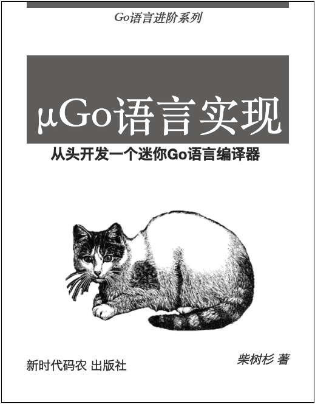

µGo语言实现——从头开发一个迷你Go语言编译器
本书尝试以实现 µGo 编译器为线索，以边学习边完善的自举方式实现一个玩具语言。

License 版权
学习目的可自由使用。
前言
Why: 凹(读音Wa)坑的起因
- 因为坑就在那里
- 不希望被Rxxx语言把脸摁在地上摩擦
- 凹坑的工具差不多齐全了
- ？
What: µGo 例子
package main
import "libc"
import m "libc.math"
const Pi = 3.14
const Pi_2 = Pi * 2
type MyInt int
type MyInt2 = int
var x = println(1 + 2*(3+4) + -10 + double(50))
func println() int
func main() int {}
Output: 输出的目标格式
为了跨平台和方便测试，输出LLVM汇编代码，如果以后可能会增加WASM文件。
1. 基础
本章简单介绍 µGo 特点、一个最简编译器、和LLVM-IR汇编基础。
1.1. µGo简介
µGo 是迷你Go语言玩具版本，只保留最基本的int数据类型、变量定义和函数、分支和循环等最基本的特性。µGo 有以下的关键字：var、func、if、for、return。此外有一个int内置的数据类型，func input() int 函数读取一个整数，println(...) 打印函数。
比如计算1到100的和对应以下代码：
func main() {
var sum int
for i := 0; i <= 100; i = i+1 {
sum = sum+1
}
println(sum)
}
µGo 的具体定义会根据需要和实现的情况调整，目前可以将其作为Go的最小子集就可。
1.2. 最小编译器
我们先从最小的整数开始，每个整数表示一个返回该值状态码的程序。
比如 0 表示 os.Exit(0)。它对应以下的Go程序：
package main;
import "os"
func main() {
os.Exit(0)
}
对应以下的LLVM-IR代码:
define i32 @main() {
ret i32 0
}
入口是@main函数，ret指令返回i32类型的0。
可以通过以下命令编译并执行这个汇编程序：
$ clang -o a.out _main.ll
$ ./a.out
$ echo $?
0
clang 将汇编程序编译为本地可执行程序，然后执行 a.out 程序，最后通过shell的 echo $? 命令查看 a.out 的退出状态码。
最小编译器就是将输入的整数翻译为可执行程序的返回该状态码的本地程序：
func compile(code string) {
output := fmt.Sprintf(tmpl, code)
os.WriteFile("a.out.ll", []byte(output), 0666)
exec.Command("clang", "-Wno-override-module", "-o", "a.out", "a.out.ll").Run()
}
const tmpl = `
define i32 @main() {
ret i32 %v
}
`
其中 compile 是编译函数，将从stdin输入的代码先编译为汇编程序，然后调用clang将汇编程序编译为本地可执行程序（tmpl是输出汇编的模板）。
通过以下命令将输入的状态码编译为一个对应的可执行程序：
$ echo 123 | go run main.go
$ ./a.out
$ echo $?
123
这样我们就实现了一个只能编译整数到本地可执行程序的最小编译器。
1.3. LLVM汇编简介
LLVM是低级虚拟机，其对应的指令可以看做是一种低级跨平台汇编语言（LLVM IR 是一种 SSA静态单赋值语言）。本节我们简单介绍LLVM汇编语言。
最简汇编程序
最小编译器的例子我们见识过最简LLVM汇编程序：
; hello.ll
define i32 @main() {
ret i32 42
}
;开始的是行注释，注明了汇编程序文件为 hello.ll。define 定义一个 @main 函数，函数返回值是 i32 类型。@main函数的实现只有一个ret返回语句，返回 i32 类型的 42。
通过以下命令编译为可执行程序、并执行和查看返回值：
$ clang hello.ll
warning: overriding the module target triple with x86_64-apple-macosx10.15.4 [-Woverride-module]
1 warning generated.
$ ./a.out
$ echo $?
42
其中clang命令输出了一个警告信息：表示该LLVM程序没有指定目标平台，因此用本地环境覆盖了。警告错误中的 x86_64-apple-macosx10.15.4 为 LLVM 到目标三元组，第一个 x86_64 表示 CPU 类型、第二个 apple 表示操作系统类型、第三个 macosx10.15.4 操作系统版本信息。我们可以通过给 clang 添加 -Wno-override-module 命令行参数关闭该警告信息（在汇编程序中添加 target triple = "x86_64-apple-macosx10.15.4"也可以，不过汇编程序就绑死了目标平台）。
打印加减法结果
要实现加减法运算，可以通过LLVM的add和sub指令完成：
define i32 @main() {
%x1 = add i32 1, 3
%x2 = sub i32 %x1, 2
ret i32 %x2 ; 1+3-2
}
其中 add 和 sub 分别做减法和减法，指令后面跟着的3个参数分别是 类型、二元操作数。返回的结果依然可以通过 echo $? 方式查看，不过需要注意到是 shell 只支持 0-255 范围内的返回值。
如果要直接输出运算结果，可以借助 C语言的 @printf 函数完成：
declare i32 @printf(i8*,...)
@format = constant [4 x i8] c"%d\0A\00"
define i32 @main() {
; 1 + 3 - 2
%x1 = add i32 1, 3
%x2 = sub i32 %x1, 2
; printf("%d\n", x2)
call i32(i8*,...) @printf(i8* getelementptr([4 x i8], [4 x i8]* @format, i32 0, i32 0), i32 %x2)
ret i32 0
}
首先通过 declare 指令从外部导入 @printf 函数。然后定义 @format 字符串常量 "%d\n"，用于 printf 函数的第一个参数（其中%d表示输出一个整数）。call 指令调用@printf打印函数输出%x2的值，其中 getelementptr 是将 @format 转为 i8*类型的指针传入第一个参数，第二个参数是 i32 类型的 %x2。
程序结构
LLVM汇编程序的结构大同小异，最开始是目标三元组（可省略）：
target triple = "x86_64-pc-linux-gnu"
然后是导入的和本地定义的函数、类型、常量、变量等：
; 声明 puts 函数
declare i32 @puts(i8*)
; 定义常量字符串
@msg = constant [14 x i8] c"Hello, world!\00"
最后是全局函数的定义：
define i32 @main() {
entry:
call i32(i8*) @puts(i8* getelementptr([14 x i8], [14 x i8]* @msg, i32 0, i32 0))
ret i32 0
}
这里的main函数通过外部的C语言puts函数输出一个“Hello, world!”字符串。
小结
LLVM IR 是一种 SSA静态单赋值语言，因此每个名称在您的程序中只能被分配一次。全局名称以 @开头，通常用于全局常量或函数名称，例如 @main。在每个函数中使用局部寄存器名称，这些名称以%开头（这些并不是真正的寄存器，因此数量并无限制）。
LLVM的常见类型：
- i1：1位整数，可以用于分支判断的条件
- i8：8为整数，对应 byte 类型
- i32：32位整数
- i64：64位整数
[N x type]：长度为N，类似是type的数组，比如@format = constant [4 x i8] c"%d\0A\00"对应[4]int8类型数组。type*：指向type类型的指针type(types)：函数类型，type是函数返回值类型，types是参数的类型。比如 main 函数可能是i32()或i32(i32,i8**)类型。
每个 LLVM IR 函数内的指令被分组为基本块或普通指令。每个基本块都可以选择以一个标签开头（如果只有一个块则可以省略）。并且每个基本块都必须以特殊的“终止符指令”结尾（比如 br 、ret等指令）。每个基本块标签也对应一个虚拟寄存器，可以通过%label访问其对应的地址。
LLVM 语言参考在这里：https://llvm.org/docs/LangRef.html
2. 表达式
表达式是编程语言中大家最熟悉部分，我们先从将表达式翻译为LLVM-IR开始。
2.1. 加减法表达式
在前一节我们通过最小编译器将一个整数编译为可以返回相同状态码的程序。现在我们尝试将加法和减法的表达式编译为同样的程序。
比如有 1+3-2 表达式，手工编写对应的LLVM汇编程序如下：
define i32 @main() {
; 1 + 3 - 2
%t0 = add i32 0, 1 ; t0 = 1
%t1 = add i32 %t0, 3 ; t1 = t0 + 3
%t2 = sub i32 %t1, 2 ; t2 = t1 - 2
ret i32 %t2
}
如果将输入的1+3-2转化为[]string{"1", "+", "3", "-", "2"} 形式，我们则可以通过以下代码输出对应的汇编程序：
func gen_asm(tokens []string) string {
var buf bytes.Buffer
fmt.Fprintln(&buf, `define i32 @main() {`)
var idx int
for i, tok := range tokens {
if i == 0 {
fmt.Fprintf(&buf, "\t%%t%d = add i32 0, %v\n",
idx, tokens[i],
)
continue
}
switch tok {
case "+":
idx++
fmt.Fprintf(&buf, "\t%%t%d = add i32 %%t%d, %v\n",
idx, idx-1, tokens[i+1],
)
case "-":
idx++
fmt.Fprintf(&buf, "\t%%t%d = sub i32 %%t%d, %v\n",
idx, idx-1, tokens[i+1],
)
}
}
fmt.Fprintf(&buf, "\tret i32 %%t%d\n", idx)
fmt.Fprintln(&buf, `}`)
return buf.String()
}
而如何将输入的字符串拆分为记号数组本质上属于词法分析的问题。我们先以最简单的方式实现：
func parse_tokens(code string) (tokens []string) {
for code != "" {
if idx := strings.IndexAny(code, "+-"); idx >= 0 {
if idx > 0 {
tokens = append(tokens, strings.TrimSpace(code[:idx]))
}
tokens = append(tokens, code[idx:][:1])
code = code[idx+1:]
continue
}
tokens = append(tokens, strings.TrimSpace(code))
return
}
return
}
基本思路是通过 strings.IndexAny(code, "+-") 函数调用根据 +- 符号拆分，最终返回拆分后的词法列表。
然后对上个版本的compile函数稍加改造以支持加法和减法的运算表达式编译：
func compile(code string) {
tokens := parse_tokens(code)
output := gen_asm(tokens)
os.WriteFile("a.out.ll", []byte(output), 0666)
exec.Command("clang", "-Wno-override-module", "-o", "a.out", "a.out.ll").Run()
}
为了便于测试，我们再包装一个run函数：
func run(code string) int {
compile(code)
if err := exec.Command("./a.out").Run(); err != nil {
return err.(*exec.ExitError).ExitCode()
}
return 0
}
run函数将输入的表达式程序编译并运行、最后返回状态码。然后构造单元测试：
func TestRun(t *testing.T) {
for i, tt := range tests {
if got := run(tt.code); got != tt.value {
t.Fatalf("%d: expect = %v, got = %v", i, tt.value, got)
}
}
}
var tests = []struct {
code string
value int
}{
{code: "1", value: 1},
{code: "1+1", value: 2},
{code: "1 + 3 - 2 ", value: 2},
{code: "1+2+3+4", value: 10},
}
确认单元测试没有问题后，更新main函数：
func main() {
code, _ := io.ReadAll(os.Stdin)
fmt.Println(run(string(code)))
}
通过以下命令执行：
$ echo "1+2+3" | go run main.go
6
2.2. 乘除法表达式
这节我们在加减表达式基础之上增加乘除和小括弧的支持。在开始之前我们先对比下加减表达式和可乘除的表达式的本质区别。
因为加减表达式只有一种优先级，可以从左到右依次在当前结果的基础上计算出每一步的结果，因此只需要一个寄存器表示中间结果即可。如果基于有限数量的寄存器进行任意的加减乘除运算则可能需要借助栈保存中间结果。不过LLVM是一个SSA静态单赋值的抽象汇编语言，其虚拟的寄存器数量是无限的，因此只要处理好乘除法的优先级就可以轻松完成任意的加减乘除表达式运算。
为了简化，我们先假设输入的表达式已经根据优先级被转化为树形结构。比如 1+2*(3+4) 对应以下的树形结构：
+
/ \
1 *
/ \
2 +
/ \
3 4
这个表达式语法树类似普通的二叉树，节点中的值对应表达式的运算符或整数。我们可以单采用以下的结构表示：
type ExprNode struct {
Value string // +, -, *, /, 123
Left *ExprNode
Right *ExprNode
}
var expr = &ExprNode{
Value: "+",
Left: &ExprNode{
Value: "1",
},
Right: &ExprNode{
Value: "*",
Left: &ExprNode{
Value: "2",
},
Right: &ExprNode{
Value: "+",
Left: &ExprNode{
Value: "3",
},
Right: &ExprNode{
Value: "4",
},
},
},
}
现在可以构造针对ExprNode的 Compiler 对象：
type Compiler struct {
nextId int
}
func (p *Compiler) GenLLIR(node *ExprNode) string {
var buf bytes.Buffer
fmt.Fprintf(&buf, "define i32 @main() {\n")
fmt.Fprintf(&buf, " ret i32 %s\n", p.genValue(&buf, node))
fmt.Fprintf(&buf, "}\n")
return buf.String()
}
func (p *Compiler) genId() string {
id := fmt.Sprintf("%%t%d", p.nextId)
p.nextId++
return id
}
其中 GenLLIR 方法用于将 node 翻译为一个LLVM汇编语言，表达式的终极节点通过p.genValue(&buf, node)完成编译。此外还有一个genId辅助方法用于生成唯一的局部虚拟寄存器名字。
genValue 的实现如下：
func (p *Compiler) genValue(w io.Writer, node *ExprNode) (id string) {
if node == nil {
return ""
}
id = p.genId()
switch node.Value {
case "+":
fmt.Fprintf(w, "\t%s = add i32 %s, %s\n",
id, p.genValue(w, node.Left), p.genValue(w, node.Right),
)
case "-":
fmt.Fprintf(w, "\t%s = sub i32 %s, %s\n",
id, p.genValue(w, node.Left), p.genValue(w, node.Right),
)
case "*":
fmt.Fprintf(w, "\t%s = mul i32 %s, %s\n",
id, p.genValue(w, node.Left), p.genValue(w, node.Right),
)
case "/":
fmt.Fprintf(w, "\t%s = sdiv i32 %s, %s\n",
id, p.genValue(w, node.Left), p.genValue(w, node.Right),
)
default:
fmt.Fprintf(w, "\t%[1]s = add i32 0, %[2]s; %[1]s = %[2]s\n",
id, node.Value,
)
}
return
}
如果node.Value是加减乘除运算符，则递归编译左右子树并产生新的结果，如果不是运算符则作为数值直接返回（通过将数值和0相加产生一个值）。
包装main函数执行对表达式的翻译：
func main() {
result := run(expr) // 1+2*(3+4)
fmt.Println(result)
}
运行代码将得到以下的LLVM汇编：
define i32 @main() {
%t1 = add i32 0, 1; %t1 = 1
%t3 = add i32 0, 2; %t3 = 2
%t5 = add i32 0, 3; %t5 = 3
%t6 = add i32 0, 4; %t6 = 4
%t4 = add i32 %t5, %t6
%t2 = mul i32 %t3, %t4
%t0 = add i32 %t1, %t2
ret i32 %t0
}
这样就完成了表达式树到LLVM汇编的翻译。
2.3. 解析表达式语法树
要生成语法树需要将代码的字符序列转化为词法序列，然后再将词法序列解析为结构化的语法树。本节将开发一个简易版本的词法解析器，然后在此基础之上开发一个语法解析器，最终产生前一节的语法树。
2.3.1 词法解析
在加法和减法表达式的例子我们已经实现了一个词法解析器，现在我们继续添加对*/()的解析支持。词法解析器一般叫lexer，我们新的函数改名为lex：
func Lex(code string) (tokens []string) {
for code != "" {
if idx := strings.IndexAny(code, "+-*/()"); idx >= 0 {
if idx > 0 {
tokens = append(tokens, strings.TrimSpace(code[:idx]))
}
tokens = append(tokens, code[idx:][:1])
code = code[idx+1:]
continue
}
tokens = append(tokens, strings.TrimSpace(code))
return
}
return
}
其中strings.IndexAny增加了乘除法和小括弧的支持。目前我们暂时忽略错误的输入。开发调试的同时可以添加测试代码，如下：
func TestLex(t *testing.T) {
var tests = []struct {
input string
tokens []string
}{
{"1", []string{"1"}},
{"1+22*333", []string{"1", "+", "22", "*", "333"}},
{"1+22*(3+4)", []string{"1", "+", "22", "*", "(", "3", "+", "4", ")"}},
}
for i, tt := range tests {
if got := Lex(tt.input); !reflect.DeepEqual(got, tt.tokens) {
t.Fatalf("%d: expect = %v, got = %v", i, tt.tokens, got)
}
}
}
目前的词法解析器虽然简陋，有了单元测试后面就可以放心重构和优化。词法解析可以参考Rob Pike的报告：https://talks.golang.org/2011/lex.slide。
2.3.2 语法定义
语法解析和词法解析输入类似：前者是字符序列、后者是Token序列。输出的结果少有差异：词法解析器产生的是Token扁平的序列，而语法解析产生的是结构化的语法树。
目前依然复用之前的语法树结构：
type ExprNode struct {
Value string // +, -, *, /, 123
Left *ExprNode `json:",omitempty"`
Right *ExprNode `json:",omitempty"`
}
func NewExprNode(value string, left, right *ExprNode) *ExprNode {
return &ExprNode{
Value: value,
Left: left,
Right: right,
}
}
为了便于JSON打印，我们忽略了空指针。同时增加了NewExprNode构造函数。
在解析语法之前需要明确定义语法规则，下面是EBNF表示的四则运算规则：
expr = mul ("+" mul | "-" mul)*
mul = primary ("*" primary | "/" primary)*
primary = num | "(" expr ")"
可以将EBNF看作是正则表达式的增强版本，其中|表示或、()表示组合、*表示0或多个。比如 expr 规则表示了由 mul 表示的乘法元素再次通过加法或减法组合（隐含了乘法有更高的优先级）。mul 则定义了如何通过 primary 实现乘法或除法组合。而 primary 则表示更小更不可分的数字或小括弧包含的表达式元素。
2.3.3 手工递归下降解析
有了EBNF参考之后我们就可以很容易手写一个递归下降的解析程序。手写定义一个parser解析器对象，其中包含词法序列和当前处理的pos位置。
type parser struct {
tokens []string
pos int
}
func (p *parser) peekToken() string {
if p.pos >= len(p.tokens) {
return ""
}
return p.tokens[p.pos]
}
func (p *parser) nextToken() {
if p.pos < len(p.tokens) {
p.pos++
}
}
同时也定义了2个辅助方法：peekToken预取下个元素，nextToken则是移动到下个元素。
然后参考3个规则定义3个有着相同结构的递归函数，每个函数递归构造出语法树：
func (p *parser) build_expr() *ExprNode {
node := p.build_mul()
for {
switch p.peekToken() {
case "+":
p.nextToken()
node = NewExprNode("+", node, p.build_mul())
case "-":
p.nextToken()
node = NewExprNode("-", node, p.build_mul())
default:
return node
}
}
}
func (p *parser) build_mul() *ExprNode {
node := p.build_primary()
for {
switch p.peekToken() {
case "*":
p.nextToken()
node = NewExprNode("*", node, p.build_primary())
case "/":
p.nextToken()
node = NewExprNode("/", node, p.build_primary())
default:
return node
}
}
}
func (p *parser) build_primary() *ExprNode {
if tok := p.peekToken(); tok == "(" {
p.nextToken()
node := p.build_expr()
p.nextToken() // skip ')'
return node
} else {
p.nextToken()
return NewExprNode(tok, nil, nil)
}
}
然后再包装一个ParseExpr函数：
func ParseExpr(tokens []string) *ExprNode {
p := &parser{tokens: tokens}
return p.build_expr()
}
然后可以构造一个例子测试语法树的解析：
func main() {
// 1+2*(3+4)
expr_tokens := []string{"1", "+", "2", "*", "(", "3", "+", "4", ")"}
ast := ParseExpr(expr_tokens)
fmt.Println(JSONString(ast))
}
func JSONString(x interface{}) string {
d, _ := json.MarshalIndent(x, "", " ")
return string(d)
}
输出的JSON如下：
{
"Value": "+",
"Left": {
"Value": "1"
},
"Right": {
"Value": "*",
"Left": {
"Value": "2"
},
"Right": {
"Value": "+",
"Left": {
"Value": "3"
},
"Right": {
"Value": "4"
}
}
}
}
然后结合前一节的AST到LLVM的编译函数就可以实现表达式到可执行程序的翻译了。
2.3.4 goyacc等工具
其实在Go1.5之前都是基于goyacc工具来产生编译器，在最初的版本我们也提供了基于goyacc的例子（代码还在仓库）。但是对于新手来说，并不推荐goyacc和AntLR等自动生成解析器代码的工具，因此删除了这部分内容。首先是手写解析器对于Go这种语法比较规则的语言并不困难，手写代码不仅仅可以熟悉解析器的工作模式，也可以为错误处理带来更大的灵活性。正如Rob Pike所言，我们也不建议通过goyacc自动生成代码的迂回战术、而是要手写解析器的方式迎头而上解决问题。
2.4. 重构解析器
在前面的例子中，我们直接用string表示了词法记号。但是这样有一些问题：比如关键字“if”和“abc”变量名的类型就不好区分，同时词法记号的位置信息也丢失了。常见做法是将词法记号定义为一个int区分的类别，同时词法记号还携带一个原始字符串表示的面值（比如一个相同值到整数可能有不同的写法），同时再辅助一些位置信息。
2.4.1 定义词法结构
重新定义词法结构如下：
// 词法记号类型
type TokenType int
// 记号值
type Token struct {
Type TokenType // 记号类型
Val string // 记号原始字面值
Pos int // 开始位置
}
// 记号类型
const (
EOF TokenType = iota
ADD // +
SUB // -
MUL // *
DIV // /
LPAREN // (
RPAREN // )
)
每个记号类型配有一个二元表达式的优先级(其中0表示不是二元运算符)：
func (op TokenType) Precedence() int {
switch op {
case ADD, SUB:
return 1
case MUL, DIV:
return 2
}
return 0
}
同时提供一些辅助函数：
func (t lexType) String() string {
switch t {
case EOF:
return "EOF"
// ...
default:
return "UNKNWON"
}
}
func (t Token) String() string {
return fmt.Sprintf("Token(%v:%v)", t.Type, t.Val)
}
2.4.2 定义语法树结构
词法定义从string变化为Token，AST结构调整如下：
type ExprNode struct {
Token // +, -, *, /, 123
Left *ExprNode `json:",omitempty"`
Right *ExprNode `json:",omitempty"`
}
func NewExprNode(token Token, left, right *ExprNode) *ExprNode {
return &ExprNode{
Token: token,
Left: left,
Right: right,
}
}
现在的Token包含了完整的信息，对应每个终结字符。
2.4.3 词法解析器重构
有了Token结构之后，我们只需要将输入到代码字符串解析为Token序列即可。之前的词法是通过strings.IndexAny做分词，现在我们改用text/scanner包来辅助解析：
func Lex(code string) (tokens []Token) {
var s scanner.Scanner
s.Init(strings.NewReader(code))
for x := s.Scan(); x != scanner.EOF; x = s.Scan() {
var tok = Token{
Val: s.TokenText(),
Pos: s.Pos().Offset,
}
switch x {
case scanner.Int:
tok.Type = NUMBER
default:
switch s.TokenText() {
case "+":
tok.Type = ADD
case "-":
tok.Type = SUB
case "*":
tok.Type = MUL
case "/":
tok.Type = DIV
case "(":
tok.Type = LPAREN
case ")":
tok.Type = RPAREN
default:
tok.Type = ILLEGAL
tokens = append(tokens, tok)
return
}
}
tokens = append(tokens, tok)
}
tokens = append(tokens, Token{Type: EOF})
return
}
scanner.Scanner可以解析常见的词法，我们只提取表达式需要的整数、四则运算和小括弧，其他类型记号用ILLEGAL表示无效值。
scanner.Scanner对于解析真正的Go代码是稍显不足的。不过词法解析是相对容易实现的工作，大家可以选择自己喜欢的方式实现，甚至直接参考Go的go/token和go/scanner包也可以。
2.4.4 Token流读取器
有了Lex函数之后我们就可以将代码转换为扁平的Token序列，然后在此基础之上通过语法解析器构造结构化的语法树。为了简化解析器的工作，我们再包装一个Token流读取器。
type TokenReader struct {
tokens []Token
pos int
width int
}
func NewTokenReader(input []Token) *TokenReader {
return &TokenReader{tokens: input}
}
NewTokenReader 函数构造Token流读取器。
然后提供最常用的Peek、Read、Unread等类似的方法：
func (p *TokenReader) PeekToken() Token {
tok := p.ReadToken()
p.UnreadToken()
return tok
}
func (p *TokenReader) ReadToken() Token {
if p.pos >= len(p.tokens) {
p.width = 0
return Token{Type: EOF}
}
tok := p.tokens[p.pos]
p.width = 1
p.pos += p.width
return tok
}
func (p *TokenReader) UnreadToken() {
p.pos -= p.width
return
}
为了方便解析器工作，再定义 AcceptToken、MustAcceptToken两个方法：
func (p *TokenReader) AcceptToken(expectTypes ...TokenType) (tok Token, ok bool) {
tok = p.ReadToken()
for _, x := range expectTypes {
if tok.Type == x {
return tok, true
}
}
p.UnreadToken()
return tok, false
}
func (p *TokenReader) MustAcceptToken(expectTypes ...TokenType) (tok Token) {
tok, ok := p.AcceptToken(expectTypes...)
if !ok {
panic(fmt.Errorf("token.Reader.MustAcceptToken(%v) failed", expectTypes))
}
return tok
}
AcceptToken方法可以用于适配可选的Token符号，比如if之后可选的else可以用if _, ok := r.AcceptToken(token.ELSE); ok { ... }方式处理。而MustAcceptToken则必须匹配相应的Token，比如t.MustAcceptToken(token.RPAREN)强制匹配右小括弧。
2.4.5 二元表达式解析简化
BNF语法可以实现表达式的多优先级支持，比如前面支持加减乘除四则运算的EBNF如下：
expr = mul ("+" mul | "-" mul)*
mul = primary ("*" primary | "/" primary)*
primary = num | "(" expr ")"
其中通过引入mul和primary规则来表示2个不同的优先级。而Go语言的二元表达式有||、&&、==、+和*等5中不同的优先级。如果完全通过EBNF来表示优先级则需要构造更为复杂的规则：
expr = logic_or
logic_or = logic_and ("||" logic_and)*
logic_and = equality ("&&" relational)*
equality = relational ("==" relational | "!=" relational)*
add = mul ("+" mul | "-" mul)*
mul = unary ("*" unary | "/" unary)*
unary = ("+" | "-")? primary
primary = num | "(" expr ")"
这种复杂性和Go语言推崇的少即是多的哲学是相悖的！其实Go语言在设计表达式时有意无意地忽略了对右结合二元表达式的支持，如果配合运算符的优先级可以实现更简单的二元表达式解析。
下面我们看看如何简化二元表达式解析。四则运算表达式简化的ENBNF语法如下：
expr = unary ("+" | "-" | "*" | "/") unary)*
unary = ("+" | "-")? primary
不在区分优先级，只有二元和一元表达式之分。因为二元表达式只有左结合一种，配合运算符优先级可以控制剩余表达式左结合的时机。
下面重新实现ParseExpr函数：
func ParseExpr(input []Token) *ExprNode {
r := NewTokenReader(input)
return parseExpr(r)
}
func parseExpr(r *TokenReader) *ExprNode {
return parseExpr_binary(r, 1)
}
内部将Token列表转换为TokenReader，然后调用内部parseExpr函数。parseExpr函数以优先级1为参数调用parseExpr_binary解析二元表达式。
parseExpr_binary实现如下：
func parseExpr_binary(r *TokenReader, prec int) *ExprNode {
x := parseExpr_unary(r)
for {
op := r.PeekToken()
if op.Type.Precedence() < prec {
return x
}
r.MustAcceptToken(op.Type)
y := parseExpr_binary(r, op.Type.Precedence()+1)
x = &ExprNode{Token: op, Left: x, Right: y}
}
return nil
}
首先是parseExpr_unary产生一个一元的表达式，然后根据运算符op优先级和当前处理的优先级大小控制剩余表达式的递归时机。如果op比当前函数处理的优先级更高，则继续将下一个表达式递归左结合到x中，否则结束当前左结合。
一元表达式的解析如下：
func parseExpr_unary(r *TokenReader) *ExprNode {
if _, ok := r.AcceptToken(ADD); ok {
return parseExpr_primary(r)
}
if _, ok := r.AcceptToken(SUB); ok {
return &ExprNode{
Token: Token{Type: SUB},
Left: &ExprNode{Token: Token{Type: NUMBER, Val: "0"}},
Right: parseExpr_primary(r),
}
}
return parseExpr_primary(r)
}
如果是+x则用x表示，如果是-x则用0-x表示。parseExpr_primary 则表示一个数值或小括弧包含的表达式，实现如下：
func parseExpr_primary(r *TokenReader) *ExprNode {
if _, ok := r.AcceptToken(LPAREN); ok {
expr := parseExpr(r)
r.MustAcceptToken(RPAREN)
return expr
}
return &ExprNode{
Token: r.MustAcceptToken(NUMBER),
}
}
现在我们得到了一个更加简洁的支持多优先级只有左结合二元表达式的解析器。以后如果要支持相等更多的优先级运算符，则需要更新Token类型的优先级即可，解析器部分的代码不用变化。
3. 最小µGo程序
本章将尝试编译最小的最小µGo程序，代码如下：
package main
func main() {
exit(40+2) // 退出码 42
}
针对最小µGo程序，我们需要重新设计完善AST，然后编译main函数的唯一一个函数调用语句。exit则是作为builtin函数，完成退出程序的操作。
3.1 AST视角的µGo程序
最小的µGo程序虽然只有一个函数，函数中只有一个exit函数调用，但是已经是具有一个完整的程序的基本结构。本节我们将从AST角度分析最小µGo程序的结构，AST相关的代码在ast子包定义。
3.1.1 最小µGo程序
最小µGo程序代码如下：
package main
func main() {
exit(40+2) // 退出码 42
}
3.1.2 Package信息
为了减少干扰，我们先排除全部的注释信息。有含义的语句首先是package main，表示这是一个main包。我们可以定义一个Package结构表示：
type Package struct {
PkgPos int
NamePos int
Name string
}
其中PkgPos表示package关键字的位置，NamePos表示包名的开始位置，Name表示包的名字。我们通过在Package结构定义关键元素的值和位置信息，就可以精确表示文本格式的µGo程序（或则说可以轻松将ast.Package这个结构原样恢复出原始的µGo程序，而代码和AST的双向转换正是语法解析和代码格式化的基础）。
3.1.3 函数定义
然后是函数的表示：这个最小程序虽然只有一个main函数，但是正常的µGo程序可以定义很多个函数。。我们现在尝试定义一个可以表示函数AST的Func结构：
type Func struct {
FuncPos int
NamePos int
Name string
Body *BlockStmt
}
其中FuncPos和NamePos分别是func关键字和函数名字的开始位置，Name表示函数的名字（同样为了简单，我们忽略函数的参数和返回值信息，也忽略了小括弧的位置信息），然后BlockStmt类型的Body表示函数体内的语句。
3.1.4 块语句
目前函数虽然只有一个exit(40+2)语句，但是真实的µGo程序同样可以包含多个不同类型的语句。语句大约可以看作是分号分隔的、相同层级、顺序执行的代码。上面代码出现的BlockStmt就表示一个块语句，一个块语句是大括弧包含的语句序列。BlockStmt定义如下：
type BlockStmt struct {
Lbrace int // '{'
List []Stmt
Rbrace int // '}'
}
其中Lbrace和Rbrace是左右大括弧的位置，而List则是Stmt接口表示的语句列表。因为µGo程序中可能有变量定义、赋值、表达式、if、for、return等不同类型的语句，因此我们需要定义一个Stmt类型的接口来表示语句：
type Stmt interface {
Pos() int
End() int
stmt_type()
}
语句也有一些共性的方法，其中Pos和End返回语句的开始和结束位置，对应一个语句代码的区间。同时为了区分Stmt和其他类型，我们定义了一个stmt_type私有方法。
3.1.5 表达式语句
光有Stmt接口我们依然无法表示目前的最小µGo程序。我们还需要为表达式语句定义一个ExprStmt结构：
type ExprStmt struct {
X Expr
}
type Expr interface {
Pos() int
End() int
expr_type()
}
ExprStmt结构中只有一个X成员，表示一个Expr类型的表达式（表达式可以产生值，也可能没有值，比如一个没有返回值的函数调用）。而Expr是与Stmt类似的接口，用于表示具体的表达式的构成。
3.1.6 四则运算表达式结构
在表达式一章我们已经通过一个简化的ExprNode节点表示全部的一元和二元表达式。但是目前的最小µGo程序出现了新的表达式结构：函数调用。因此，我们需要为表达式定义更为友好的结构：
type Number struct {
ValuePos int
ValueEnd int
Value int
}
type BinaryExpr struct {
Op token.Token // 运算符
X Expr // 左边的运算对象
Y Expr // 右边的运算对象
}
type UnaryExpr struct {
Op token.Token // 运算符
X Expr // 运算对象
}
type ParenExpr struct {
Lparen int // "(" 的位置
X Expr // 圆括弧内的表达式对象
Rparen int // ")" 的位置
}
其中Number表示一个普通的整数字面值、BinaryExpr表示二元表达式、UnaryExpr表示一元表达式、ParenExpr表示小括弧表达式。其中递归的表达式定义都是Expr类型，其他属性则是运算符类型和位置信息等。需要注意到是token.Token是一个词法记号值，其中不仅仅包含记号的类型和字面值，还包含记号的位置信息（在稍后的词法分析部分会继续讨论）。
3.1.7 函数调用表达式
函数调用表达式定义如下：
type CallExpr struct {
FuncPos int
FuncName string
Lparen int
Args []Expr
Rparen int
}
FuncPos和FuncName是调用函数的名字和位置信息，Lparen和Rparen是小括弧位置，Args则是函数的参数表达式列表。
3.1.8 File结构
最小µGo程序的全部元素以已经定义，我们现在定义一个File结构表示一个文件：
type File struct {
Pkg *Package
Funcs []Func
}
其中Pkg表示包信息，Funcs则表示文件中顺序出现的函数列表。
3.1.9 AST表示的µGo程序
现在我们尝试通过AST表示µGo程序（为了方便表示，我们暂时忽略位置信息）：
import "github.com/chai2010/ugo/ast"
import "github.com/chai2010/ugo/token"
var ugoProg = &ast.File {
Pkg: &ast.Package{
Name: "main",
},
Funcs: []ast.Func{
{
Name: "main",
Body: &ast.BlockStmt {
List: []ast.Stmt{
&ast.ExprStmt{
X: &ast.CallExpr{
FuncName: "exit",
Args: []ast.Expr{
&ast.BinaryExpr{
Op: token.Token{Type: token.ADD},
X: &ast.Number{Value: 40},
Y: &ast.Number{Value: 2},
},
},
},
},
},
},
},
},
}
这样我们就得到了一个全新形式表示的µGo程序。
3.1.10 小结
AST是编译器前后端链接的纽带：AST虽然看起来繁琐，但是结构非常清晰，非常适合程序处理。有了AST之后我们不仅仅可以进行语义检查、编译到汇编代码、也可以进行AST结构转换和代码格式化等很多工作。在本章稍后，我们将围绕AST明确token包的结构、讨论如何遍历AST、以及如何从AST输出LLVM汇编代码。
3.2 AST到LLVM汇编
在前一节我们已经采用AST形式编写了一个最小µGo程序，本节我们尝试将这个AST翻译到LLVM汇编程序。
3.2.1 对应的LLVM汇编程序
我们已经了解了AST的数据结构，在翻以前我们还需要明确要输出的汇编代码的形式。只有先在大脑人肉完成翻译工作后，才真正好通过程序实现自动化的翻译。
结合第二章表达式的内容，可以想象输出以下的汇编程序：
declare i32 @ugo_builtin_exit(i32)
define i32 @ugo_main_main() {
%t0 = add i32 0, 40 ; t0 = 40
%t1 = add i32 0, 2 ; t1 = 2
%t2 = add i32 %t0, %t1 ; t2 = t1 + t1
call i32(i32) @ugo_builtin_exit(i32 %t2)
ret i32 0
}
第一句是通过declare声明@ugo_builtin_exit内置函数（稍后通过其他工具生成），其作用是将一个整数参数作为退出码退出程序。然后@ugo_main_main是µGo的main包中的main函数输出的LLVM对应的函数，并在开头增加了ugo_前缀。函数体则是通过计算一个表达式，然后作为参数调用µGo的exit内置函数对应的代码。
要执行该程序需要在main入口函数调用@ugo_main_main函数：
define i32 @main() {
call i32() @ugo_main_main()
ret i32 0
}
以上这2段代码就是我们的编译器需要生成的汇编程序。
3.2.2 准备@ugo.builtin.exit内置函数
为了简单，我们采用C语言实现µGo内置的@ugo_builtin_exit函数：
// builtin.c
extern int exit(int);
int ugo_builtin_exit(int x) {
exit(x);
return 0;
}
然后用clang -S -emit-llvm builtin.c将C代码转化为LLVM汇编语言格式。输出的builtin.ll文件如下：
declare void @exit(i32)
define i32 @ugo_builtin_exit(i32) {
%2 = alloca i32, align 4
store i32 %0, i32* %2, align 4
%3 = load i32, i32* %2, align 4
%4 = call i32 @exit(i32 %3)
unreachable
}
然后结合前面编译器将要生成的main.ll程序，用clang命令再编译连接执行：
$ clang builtin.ll main.ll
$ ./a.out
$ echo $?
42
验证一切正常之后，我们就可以开始尝试用程序生成main.ll了。
3.2.3 构造compiler.Compiler对象
编译器的代码放在compiler包，其中Compiler对象提供一个编译方法：
type Compiler struct{}
func (p *Compiler) Compile(f *ast.File) string {
var buf bytes.Buffer
p.genHeader(&buf, file)
p.compileFile(&buf, file)
p.genMain(&buf, file)
return buf.String()
}
参数是输入的ast.File，对应µGo程序的AST。其中p.genHeader调用用于生成内置函数的声明，p.compileFile则将µGo程序编译为LLVM汇编，最后p.genMain将main.main函数挂到入口的main函数。
3.2.4 内置函数声明和入口代码生成
内置函数的声明和入口函数的定义均在builtin包定义：
package builtin
const Header = `
declare i32 @ugo_builtin_exit(i32)
`
const MainMain = `
define i32 @main() {
call i32() @ugo_main_main()
ret i32 0
}
`
对应的编译函数实现：
package compiler
import (
"github.com/chai2010/ugo/builtin"
)
func (p *Compiler) genHeader(w io.Writer, file *ast.File) {
fmt.Fprintf(w, "; package %s\n", file.Pkg.Name)
fmt.Fprintln(w, builtin.Header)
}
func (p *Compiler) genMain(w io.Writer, file *ast.File) {
if file.Pkg.Name != "main" {
return
}
for _, fn := range file.Funcs {
if fn.Name == "main" {
fmt.Fprintln(w, builtin.MainMain)
return
}
}
}
genHeader方法首先生成注释说明当前边缘的源文件信息，然后输出内置函数的声明。genMain函数则是针对main.main输出main入口函数。
3.2.5 编译文件
因为目前的程序比较简单，AST中只有函数。compileFile实现如下：
func (p *Compiler) compileFile(w io.Writer, file *ast.File) {
for _, fn := range file.Funcs {
p.compileFunc(w, file, fn)
}
}
只是简单遍历file.Funcs包含的每个函数，然后调用p.compileFunc编译函数。
p.compileFunc实现如下：
func (p *Compiler) compileFunc(w io.Writer, file *ast.File, fn *ast.Func) {
if fn.Body == nil {
fmt.Fprintf(w, "declare i32 @ugo_%s_%s() {\n", file.Pkg.Name, fn.Name)
return
}
fmt.Fprintf(w, "define i32 @ugo_%s_%s() {\n", file.Pkg.Name, fn.Name)
p.compileStmt(w, fn.Body)
fmt.Fprintln(w, "\tret i32 0")
fmt.Fprintln(w, "}")
}
如果函数没有Body，则产生函数的声明，否则则输出完整的函数定义。函数的定义对应一个块语句，通过p.compileStmt函数完成编译。输出的函数名字做了简单的名字修饰——增加了当前包的名字。
3.2.6 编译语句
语句是编程语言中最有价值的部分，比如if、for这些都是语句。目前的程序只有块和表达式两种语句，compileStmt实现如下：
func (p *Compiler) compileStmt(w io.Writer, stmt ast.Stmt) {
switch stmt := stmt.(type) {
case *ast.BlockStmt:
for _, x := range stmt.List {
p.compileStmt(w, x)
}
case *ast.ExprStmt:
p.compileExpr(w, stmt.X)
default:
panic("unreachable")
}
}
其实函数的Body就是一个*ast.BlockStmt，只要针对其中的每个语句再次递归调用p.compileStmt编译即可。如果是普通的表达式语句，则调用p.compileExpr编译表达式。
3.2.7 编译表达式
我们已经在第二章展示过如何编译加减乘除构成的表达式，现在的表达式则增加了一个函数调用，但是实现的方式依然相似。
调套表达式的特点是每个节点最多产生一个值（不返回或返回多个值的一般不会出现在前套的表达式中，只需要特化处理即可），只需要针对每个表达式节点类型分别处理：
func (p *Compiler) compileExpr(w io.Writer, expr ast.Expr) (localName string) {
switch expr := expr.(type) {
case *ast.Number:
// %t1 = add i32 0, x; x
return `%t1`
case *ast.BinaryExpr:
// %t1 = bin_op i32 x, y; x+y
return `%t1`
case *ast.UnaryExpr:
// %t1 = sub i32 0, x; -x, or x
return `%t1`
case *ast.ParenExpr:
// %t1 = %t0; (x) -> x
return `%t1`
case *ast.CallExpr:
// %t1 = call i32(i32) func(i32 %x)
return `%t1`
}
panic("unreachable")
}
普通的数字面值、二元、一元和小括弧和第2章产生的方式类似：
func (p *Compiler) compileExpr(w io.Writer, expr ast.Expr) (localName string) {
switch expr := expr.(type) {
case *ast.Number:
localName = p.genId()
fmt.Fprintf(w, "\t%s = %s i32 %v, %v\n",
localName, "add", `0`, expr.Value,
)
return localName
case *ast.BinaryExpr:
localName = p.genId()
switch expr.Op.Type {
case token.ADD:
fmt.Fprintf(w, "\t%s = %s i32 %v, %v\n",
localName, "add", p.compileExpr(w, expr.X), p.compileExpr(w, expr.Y),
)
return localName
case token.SUB:
// ...
case token.MUL:
// ...
case token.DIV:
// ...
}
case *ast.UnaryExpr:
if expr.Op.Type == token.SUB {
localName = p.genId()
fmt.Fprintf(w, "\t%s = %s i32 %v, %v\n",
localName, "sub", `0`, p.compileExpr(w, expr.X),
)
return localName
}
return p.compileExpr(w, expr.X)
case *ast.ParenExpr:
return p.compileExpr(w, expr.X)
// ...
函数调用是新加的，实现如下：
case *ast.CallExpr:
// call i32(i32) @ugo_builtin_exit(i32 %t2)
localName = p.genId()
fmt.Fprintf(w, "\t%s = call i32(i32) @ugo_builtin_%s(i32 %v)\n",
localName, expr.FuncName, p.compileExpr(w, expr.Args[0]),
)
return localName
}
panic("unreachable")
}
为了简化函数的返回值和参数类型目前是固定的，函数的名字增加一个@ugo_builtin_前缀。到此我们基本完成了编译器后端的基础工作。
3.2.8 组装编译器
现在我们可以构造一个测试程序，将AST和编译函数串起来：
package main
import (
"fmt"
"github.com/chai2010/ugo/ast"
"github.com/chai2010/ugo/compiler"
)
func main() {
ast := &ast.File{} // 用ch3.1内容填充
ll := new(compiler.Compiler).Compile(ast)
fmt.Print(ll)
}
输出的LL汇编程序：
; package main
declare i32 @ugo_builtin_exit(i32)
define i32 @ugo_main_main() {
%t2 = add i32 0, 40
%t3 = add i32 0, 2
%t1 = add i32 %t2, %t3
%t0 = call i32(i32) @ugo_builtin_exit(i32 %t1)
ret i32 0
}
define i32 @main() {
call i32() @ugo_main_main()
ret i32 0
}
这样我们就实现了自动翻译的编译器程序。
3.3 完善词法解析器
以最小µGo程序为例，本节讨论如何继续完善词法解析器，为后续的语法解析器提供基础。
3.3.1 Token视角的µGo程序
英语和中文有着极大的区别：英语由少量的26个字母构成，然后由字母再构造成一个个单词，而这些单词和中文的一个个汉字类似，每个单词都有着一定的语义。词法分析的工作和英语中从字母序列分析为单词序列的工作类似（中文应为汉字数量众多，词法解析的比重相对较低）。我们看到的程序其实都是字母序列，因此第一步工作是将字母序列转换为单词序列。
而µGo编译器中每个单词对应属于Token，一个Token可以是一个数字、也可以是一个变量名，或则是一个加法符号。我们现在以Token视角看看之前的µGo程序是什么样子的。
最小µGo程序的字母序列（为了不被语法高亮的特性迷惑，这里刻意关闭了语法高亮特性）：
package main
func main() {
exit(40+2) // 退出码 42
}
对应的Token序列如下（忽略注释部分）：
import "github.com/chai2010/ugo/token"
var ugoTokens = []token.Token {
{Type: token.PACKAGE}, // package
{Type: token.IDENT, Value: "main"}, // main
{Type: token.FUNC}, // func
{Type: token.IDENT, Value: "main"}, // main
{Type: token.LPAREN}, // (
{Type: token.RPAREN}, // )
{Type: token.LBRACE}, // {
{Type: token.IDENT, Value: "exit"}, // exit
{Type: token.LPAREN}, // (
{Type: token.NUMBER, Value: 40}, // 40
{Type: token.ADD}, // +
{Type: token.NUMBER, Value: 2}, // 2
{Type: token.RPAREN}, // )
{Type: token.RBRACE}, // }
}
这种转化也就是此法解析器需要完成的工作：我们需要在能够尽量准确表达原始程序的前提下尽量简化后续解析器的分析工作。目前看，这个词法序列似乎是可以准确表示最小µGo程序的。
3.3.2 分号和注释
我们尝试再从Token序列反向恢复出原始的µGo程序：
package main func main() { exit(40+2) }
实际上这是个错误的Go程序，将会产生以下的语法错误：
syntax error: unexpected func, expecting semicolon or newline
简单说，在package main和func之间至少要有一个换行符号或则是分号。其实语法解析器最终需要的是分号，因为分号才是Go语言中语句的分隔符号（正如空白也是单词之间的分隔符）。而Go语言的词法解析起在解析时如果是特殊的Token遇到换行（标识符、数字或字符串等字面值、break/continue/fallthrough/return等关键字、++/--/)/]/}等运算符，同时)/}之前的分号可以省略，具体请参考 spec 文档），会自动添加分号。
同样，注释是可以以任意的形式混入在Token序列之间的。如果加入注释的干扰，会导致语法的定义和分析变得复杂。常见的做法是词法解析的同时记录每个Token的位置信息，词法解析完成后将注释剥离再进行语法解析，等语法解析器完成AST构造之后再将注释根据位置合并到AST的相应结点中。
3.3.3 完善token包的记号类型
token包的内容和第2章结构类似，增加了部分新的关键字类型：
package token
// 记号类型
type TokenType int
// ch3中 µGo程序用到的记号类型
const (
EOF TokenType = iota
ERROR
COMMENT
IDENT
NUMBER
PACKAGE
FUNC
ADD // +
SUB // -
MUL // *
DIV // /
LPAREN // (
RPAREN // )
LBRACE // {
RBRACE // }
SEMICOLON // ;
)
增加了IDENT表示标识符、PACKAGE定义包、FUNC针对函数大括弧用于定义函数的Body、并引入了分号。如果是语法位置记号用ERROR表示，EOF表示文件结束。同时增加了COMMENT表示注释。
token.Token对应记号的值（含记号类型、解析后的值、位置和原始面值）：
type Token struct {
Type TokenType // 记号的类型
Value interface{} // 记号的值, 目前只有 int
Pos int // 记号所在的位置(从1开始)
Literal string // 程序中原始的字符串
}
这样我们就可以用[]token.Token表示的记号序列来等价地表示词法解析后的代码。
3.3.4 重构词法解析器
在地2章最后的例子中，我们通过包装text/scanner标准库实现了词法解析。这种方式虽然可以用于µGo程序，但是依然有隔山打牛的弊端。本节我们该用纯手工的方式重新实现词法解析，这样不仅仅可以让我们可以了解词法解析的实现细节，而且词法解析的套路依然可以用于后续的AST解析工作。这种问题只要彻底解决一次就一劳永逸了。
3.3.4.1 源文件SourceStream
词法解析的输入是字节流，在解析的过程中常常需要向前多看一个字符，同时也可能要忽略一些字符，为此我们需要先构造一个字节流的SourceStream对象（这个设计同样可以复制到Token流，用于语法解析）。
SourceStream定义的API如下：
type SourceStream struct {}
func NewSourceStream(name, src string) *SourceStream
func (p *SourceStream) Name() string
func (p *SourceStream) Input() string
func (p *SourceStream) Pos() int
func (p *SourceStream) Peek() rune
func (p *SourceStream) Read() rune
func (p *SourceStream) Unread()
func (p *SourceStream) Accept(valid string) bool
func (p *SourceStream) AcceptRun(valid string) (ok bool)
func (p *SourceStream) EmitToken() (lit string, pos int)
func (p *SourceStream) IgnoreToken()
NewSourceStream根据文件名和内容构造一个SourceStream对象。其Name和Input方法分别返回源文件的名字和内容。Pos方法返回当前读的位置，Peek预取下一个字符、Read读取下一个字符、Unread用于一次回退。Accept会尝试消费一个存在于valid中的字符，而AcceptRun则会尝试尽量消费多个存在于valid中的字符。EmitToken方法用于产生当前读取到的记号面值和位置信息，IgnoreToken则忽略当前的记号。
SourceStream中最基础的核心函数Read和Unread实现如下：
type SourceStream struct {
name string // 文件名
input string // 输入的源代码
start int // 当前正解析中的记号的开始位置
pos int // 当前读取的位置
width int // 最后一次读取utf8字符的字节宽度, 用于回退
}
func (p *SourceStream) Read() rune {
if p.pos >= len(p.input) {
p.width = 0
return 0
}
r, size := utf8.DecodeRune([]byte(p.input[p.pos:]))
p.width = size
p.pos += p.width
return r
}
func (p *SourceStream) Unread() {
p.pos -= p.width
return
}
Read方法会解码并读一个utf8字符，其中p.width用于记录当前读取字符的utf8编码的字节宽度，如果遇到结尾则返回0。Unread方法则可以用于进行一次回退刚刚读取的Read操作（不能进行多次回退）。
基于Read和Unread可以很容易实现Peek、Accept和AcceptRun等方法：
func (p *SourceStream) Peek() rune {
x := p.Read()
p.Unread()
return x
}
func (p *SourceStream) Accept(valid string) bool {
if strings.IndexRune(valid, rune(p.Read())) >= 0 {
return true
}
return false
}
func (p *SourceStream) AcceptRun(valid string) (ok bool) {
for p.Accept(valid) {
ok = true
}
p.Unread()
return
}
Peek等方法先用Read进行正常读取，如果失败则调用Unread回退最近一次的Read操作。
最后是产生记号面值的实现：
func (p *SourceStream) EmitToken() (lit string, pos int) {
lit, pos = p.input[p.start:p.pos], p.start
p.start = p.pos
return
}
func (p *SourceStream) IgnoreToken() {
_, _ = p.EmitToken()
}
EmitToken返回的记号面值和位置是构造token.Token的必要数据。
3.3.4.2 基于SourceStream重构词法解析器
词法解析器的API定义如下：
type Lexer struct {}
func NewLexer(name, input string) *Lexer
func (p *Lexer) Comments() []token.Token
func (p *Lexer) Tokens() []token.Token
NewLexer基于源文件名和内容构造解析器，Comments方法返回注释列表，Tokens方法返回非注释列表。
Lexer基于SourceStream对象构建：
type Lexer struct {
*SourceStream
tokens []token.Token
comments []token.Token
}
func NewLexer(name, input string) *Lexer {
p := &Lexer{ SourceStream: NewSourceStream(name, input)}
p.run()
return p
}
func (p *Lexer) Tokens() []token.Token {
return p.tokens
}
func (p *Lexer) Comments() []token.Token {
return p.comments
}
NewLexer在构造Lexer对象后，调用私有的p.run函数将源代码解析为词法列表。
在实现词法解析之前先定义一个emit方法用于产生记号，实现如下：
func (p *Lexer) emit(typ token.TokenType) {
lit, pos := p.EmitToken()
if typ == token.IDENT {
typ = token.Lookup(lit)
}
p.tokens = append(p.tokens, token.Token{
Type: typ,
Literal: lit,
Pos: pos,
})
}
手写通过p.EmitToken()调用内部SourceStream对象提供的方法，然后构造新的token.Token对象并添加到p.tokens列表。如果是标识符类型，则通过token.Lookup(lit)查询是否为关键字类型。
我们还需要一个产生注释记号的emitComment方法：
func (p *Lexer) emitComment() {
lit, pos := p.EmitToken()
p.comments = append(p.comments, token.Token{
Type: token.COMMENT,
Literal: lit,
Pos: pos,
})
}
注释也是一种token.Token，只是记录到了另一个p.comments成员中。将注释分开的原因是为了屏蔽注释对正常词法流的干扰，例如在遇到换行需要决策是否添加分号时注释会带来噪声。
我们还需要一个错误处理函数记录不能识别的记号：
func (p *Lexer) errorf(format string, args ...interface{}) {
tok := token.Token{
Type: token.ERROR,
Literal: fmt.Sprintf(format, args...),
Pos: p.Pos(),
}
p.tokens = append(p.tokens, tok)
panic(tok)
}
错误也是一种特殊的记号，添加到p.tokens成员，然后调用panic抛出异常快速退出到外层函数。
最后也是最重要的run方法解析记号：
func (p *Lexer) run() (tokens []token.Token) {
defer func() {
tokens = p.tokens
if r := recover(); r != nil {
if _, ok := r.(token.Token); !ok {
panic(r)
}
}
}()
...
首先是在defer函数中捕获errorf方法抛出的异常。词法解析的具体工作在一个for循环进行：
for {
r := p.Read()
if r == rune(token.EOF) {
p.emit(token.EOF)
return
}
switch {
case r == '\n':
case isSpace(r):
...
}
}
}
每次循环开始读取一个字符，判断如果是结束则产生EOF类型的记号并退出。否则通过switch多分枝分别解析不同类型的记号。
比如遇到换行时解析方式如下：
case r == '\n':
p.IgnoreToken()
if len(p.tokens) > 0 {
switch p.tokens[len(p.tokens)-1].Type {
case token.RPAREN, token.IDENT, token.NUMBER:
p.emit(token.SEMICOLON)
}
}
首先是通过p.IgnoreToken()忽略换行前读取的内容。然后判断是否已经读取到过记号，如果是并且前一个读取的记号是右小括弧、数字或标识符等类型时插入一个分号记号（类似Go语言可以省略大部分的行尾分号特性）。
如果是空白字符，则直接忽略：
case isSpace(r):
p.IgnoreToken()
如果是英文字母则尝试解析为标识符或关键字：
case isAlpha(r):
p.Unread()
for {
if r := p.Read(); !isAlphaNumeric(r) {
p.Unread()
p.emit(token.IDENT)
break
}
}
数字的解析如下：
case ('0' <= r && r <= '9'): // 123, 1.0
p.Unread()
digits := "0123456789"
p.AcceptRun(digits)
p.emit(token.NUMBER)
如果是数字开头，则通过p.AcceptRun尽量读取多个数字字符，然后通过p.emit(token.NUMBER)产生数字记号。
四则运算符处理如下：
case r == '+': // +, +=, ++
p.emit(token.ADD)
case r == '-': // -, -=, --
p.emit(token.SUB)
case r == '*': // *, *=
p.emit(token.MUL)
case r == '/': // /, //, /*, /=
if p.Peek() != '/' {
p.emit(token.DIV)
}
加、减、乘目前都是单个字符，直接产生记号即可。除法要特殊一点，需要分别处理行注释的问题（多行注释暂不支持）：
case r == '/': // /, //, /*, /=
if p.Peek() != '/' {
p.emit(token.DIV)
} else {
// line comment
for {
t := p.Read()
if t == '\n' {
p.Unread()
p.emitComment()
break
}
if t == rune(token.EOF) {
p.emitComment()
return
}
}
}
如果是行注释直接读取到换行或文件末尾，需要注意的是在行注释结尾要判断是否要产生分号。
其他的特色记号如下：
case r == '(':
p.emit(token.LPAREN)
case r == '{':
p.emit(token.LBRACE)
case r == ')':
p.emit(token.RPAREN)
case r == '}':
p.emit(token.RBRACE)
case r == ';':
p.emit(token.SEMICOLON)
未知的记号直接抛出错误：
default:
p.errorf("unrecognized character: %#U", r)
return
}
run方法是词法解析的核心方法，虽然目前的处理相对粗糙，后续可以根据语法的提炼慢慢改进。
3.3.5 格式化位置信息
在词法解析的过程中我们已经记录了每个记号的偏移量信息。如果结合文件名和内容可以转换为更适合阅读的行列号位置信息。
可以定义PosString函数用于将偏移量转位行列信息：
package lexer
import gotoken "go/token"
func PosString(filename string, src string, pos int) string {
fset := gotoken.NewFileSet()
fset.AddFile(filename, 1, len(src)).SetLinesForContent([]byte(src))
return fmt.Sprintf("%v", fset.Position(gotoken.Pos(pos+1)))
}
为了简单，我们直接借助了Go语言自带的token.FileSet实现此功能。需要注意点时，pos是从0开始的，转行列表时pos需要加1.
3.3.6 测试词法解析器
还是本章的最小µGo程序：
package main
func main() {
exit(40 + 2) // exit code 42
}
词法解析程序如下：
import "github.com/chai2010/ugo/lexer"
func main() {
// 构造词法解析器
code := loadCode("../hello.ugo")
lexer := lexpkg.NewLexer("../hello.ugo", code)
// 遍历正常记号
for i, tok := range lexer.Tokens() {
fmt.Printf(
"%02d: %-12v: %-20q // %s\n",
i, tok.Type, tok.Literal,
lexpkg.PosString("../hello.ugo", code, tok.Pos),
)
}
fmt.Println("----")
// 遍历注释
for i, tok := range lexer.Comments() {
fmt.Printf(
"%02d: %-12v: %-20q // %s\n",
i, tok.Type, tok.Literal,
lexpkg.PosString("../hello.ugo", code, tok.Pos),
)
}
}
输出的结果如下：
00: PACKAGE : "package" // ../hello.ugo:1:1
01: IDENT : "main" // ../hello.ugo:1:9
02: SEMICOLON : "" // ../hello.ugo:2:1
03: FUNC : "func" // ../hello.ugo:3:1
04: IDENT : "main" // ../hello.ugo:3:6
05: LPAREN : "(" // ../hello.ugo:3:10
06: RPAREN : ")" // ../hello.ugo:3:11
07: LBRACE : "{" // ../hello.ugo:3:13
08: IDENT : "exit" // ../hello.ugo:4:2
09: LPAREN : "(" // ../hello.ugo:4:6
10: NUMBER : "40" // ../hello.ugo:4:7
11: ADD : "+" // ../hello.ugo:4:10
12: NUMBER : "2" // ../hello.ugo:4:12
13: RPAREN : ")" // ../hello.ugo:4:13
14: SEMICOLON : "" // ../hello.ugo:5:1
15: RBRACE : "}" // ../hello.ugo:5:1
16: EOF : "" // ../hello.ugo:5:3
----
00: COMMENT : "// exit code 42\n" // ../hello.ugo:4:15
输出的记号不仅仅有记号类型、记号面值、还有行列号位置信息（在VSCode环境可通过鼠标点击位置实现跳转），位置信息非常有助于调试定位问题。
至此，我们我们实现了将µGo程序的字符流转化为了正常记号和注释记号的两个词法流。
3.4 完善语法解析器
本章在前一章最小µGo程序产生的token.Token序列基础之上通过解析语法产生AST语法树。
3.4.1 最小µGo程序的词法序列
最小µGo程序如下：
package main
func main() {
exit(40+2) // 退出码 42
}
基于前一章的词法解析程序将产生以下的token.Token列表：
import "github.com/chai2010/ugo/token"
var ugoTokens = []token.Token {
{Type: token.PACKAGE}, // package
{Type: token.IDENT, Literal: "main"}, // main
{Type: token.SEMICOLON}, // \n => ;
{Type: token.FUNC}, // func
{Type: token.IDENT, Literal: "main"}, // main
{Type: token.LPAREN}, // (
{Type: token.RPAREN}, // )
{Type: token.LBRACE}, // {
{Type: token.IDENT, Literal: "exit"}, // exit
{Type: token.LPAREN}, // (
{Type: token.NUMBER, Literal: "40", Value: 40}, // 40
{Type: token.ADD}, // +
{Type: token.NUMBER, Literal: "2", Value: 2}, // 2
{Type: token.RPAREN}, // )
{Type: token.SEMICOLON}, // \n => ;
{Type: token.RBRACE}, // }
}
消费这个序列产生AST语法树是本节的目标。
3.4.2 TokenStream
这个token.Token列表和词法解析器要处理的字符列表并没有本质的区别，因此我们同样可以构造和源文件SourceStream类似的TokenStream对象简化语法的解析工作。
TokenStream的API如下：
type TokenStream struct {}
func NewTokenStream(tokens []token.Token) *TokenStream
func (p *TokenStream) PeekToken() token.Token
func (p *TokenStream) ReadToken() token.Token
func (p *TokenStream) UnreadToken()
func (p *TokenStream) AcceptToken(expectTypes ...token.TokenType) (tok token.Token, ok bool)
func (p *TokenStream) AcceptTokenList(expectTypes ...token.TokenType) (toks []token.Token, ok bool)
func (p *TokenStream) MustAcceptToken(expectTypes ...token.TokenType) (tok token.Token)
func (p *TokenStream) MustAcceptTokenList(expectTypes ...token.TokenType) (toks []token.Token)
NewTokenStream主要基于普通记号序列构造TokenStream对象（目前注释记号并不参与复杂的解析工作，暂时忽略）。PeekToken、ReadToken、UnreadToken分别是预取一个记号、读取一个记号和回退一个记号。AcceptToken尝试消费一个存在于expectTypes中的一个记号，而MustAcceptTokenList则会尝试尽量消费多个满足的记号，它们都返回成功获取的记号值。而MustAcceptToken和MustAcceptTokenList则必须至少成功消费一个满足的记号，否则将通过panic抛出错误（语法解析函数会捕获这类异常并转化为错误返回值）。
最基础的ReadToken和UnreadToken实现如下：
type TokenStream struct {
tokens []token.Token
comments []token.Token
pos int
width int
}
func (p *TokenStream) ReadToken() token.Token {
if p.pos >= len(p.tokens) {
p.width = 0
return token.Token{Type: token.EOF}
}
tok := p.tokens[p.pos]
p.width = 1
p.pos += p.width
return tok
}
func (p *TokenStream) UnreadToken() {
p.pos -= p.width
return
}
ReadToken方法会解码并读一个记号，其中p.width用于控制UnreadToken回退操作，它们的实现方式和SourceStream的Read、Unread方法类似。
基于ReadToken和UnreadToken就可以很容易实现PeekToken等其他方法：
func (p *TokenStream) PeekToken() token.Token {
tok := p.ReadToken()
p.UnreadToken()
return tok
}
func (p *TokenStream) AcceptToken(expectTypes ...token.TokenType) (tok token.Token, ok bool) {
tok = p.ReadToken()
for _, x := range expectTypes {
if tok.Type == x {
return tok, true
}
}
p.UnreadToken()
return tok, false
}
func (p *TokenStream) AcceptTokenList(expectTypes ...token.TokenType) (toks []token.Token, ok bool) {
for {
tok, ok := p.AcceptToken(expectTypes...)
if !ok || tok.Type == token.EOF {
return toks, len(toks) != 0
}
toks = append(toks, tok)
}
}
PeekToken等方法先用ReadToken进行正常读取，如果失败则调用UnreadToken回退最近一次的Read操作。
为了简化错误处理，两个Must方法实现如下：
func (p *TokenStream) MustAcceptToken(expectTypes ...token.TokenType) (tok token.Token) {
tok, ok := p.AcceptToken(expectTypes...)
if !ok {
panic(fmt.Errorf("expect %v, got %v", expectTypes, tok))
}
return tok
}
func (p *TokenStream) MustAcceptTokenList(expectTypes ...token.TokenType) (toks []token.Token) {
toks, ok := p.AcceptTokenList(expectTypes...)
if !ok {
panic(fmt.Errorf("expect %v, got %v", expectTypes, tok))
}
return toks
}
通过panic可以轻松从多层递归嵌套的语法解析函数中返回，由外层函数将panic再转换为错误返回。
3.4.3 构造解析器Parser对象
Parser对象用于维护解析器内部状态，同时包装了词法解析器并在此基础上实现语法解析功能。Parser定义如下：
type Parser struct {
filename string
src string
*TokenStream
file *ast.File
err error
}
Parser对象的filename和src对应文件名和文件内容，TokenStream用于包装记号流对象，file则用于保存解析得到的AST语法树，err用于记录错误。
为了统一产生错误，Parser还提供了一个errorf函数：
func (p *Parser) errorf(pos int, format string, args ...interface{}) {
p.err = fmt.Errorf("%s: %s",
lexer.PosString(p.filename, p.src, pos),
fmt.Sprintf(format, args...),
)
panic(p.err)
}
将错误格式化之后保存到p.err，然后panic抛出异常。
解析文件通过ParseFile方法实现：
func (p *Parser) ParseFile() (file *ast.File, err error) {
defer func() {
if r := recover(); r != p.err {
panic(r)
}
file, err = p.file, p.err
}()
tokens, comments := lexer.Lex(p.filename, p.src)
for _, tok := range tokens {
if tok.Type == token.ERROR {
p.errorf(tok.Pos, "invalid token: %s", tok.Literal)
}
}
p.TokenStream = NewTokenStream(p.filename, p.src, tokens, comments)
p.parseFile()
return
}
首先在defer函数捕获p.errorf产生的异常并作为错误返回。然后通过lexer.Lex将源文件解析为记号序列，并过滤其中的错误记号。有了正确的记号序列之后通过NewTokenStream构造TokenStream记号流读取对象。最后通过p.parseFile()进行文件语法树解析。
3.4.3.1 解析文件
解析语法树的过程和写Go代码的过程，根据语法结构对应解析即可：
func (p *Parser) parseFile() {
p.file = &ast.File{}
// package xxx
p.file.Pkg = p.parsePackage()
for {
switch tok := p.PeekToken(); tok.Type {
case token.EOF:
return
case token.ERROR:
panic(tok)
case token.SEMICOLON:
p.AcceptTokenList(token.SEMICOLON)
case token.FUNC:
p.file.Funcs = append(p.file.Funcs, p.parseFunc())
default:
p.errorf(tok.Pos, "unknown token: %v", tok)
}
}
}
首先初始化p.file对象，然后通过p.parsePackage()解析package xxx对应的包定义。然后在for循环中解析全局的对象，目前我们只要处理func定义即可。在没一层选择递归入口的时候，首先通过p.PeekToken()预取一个记号，然后根据记号的类型选择不同的递归函数（因为是手写解析器，我们可以很容易向前看多个记号，实现一些更灵活的语法解析）。
目前只处理EOF、ERROR、SEMICOLON和FUNC等类型，其他未知的记号作为错误处理。对于FUNC分号，AcceptTokenList可以消费多个连续的分号。对于FUNC函数，通过p.parseFunc()解析，并将解析得到的函数添加到p.file.Funcs函数列表中。
3.4.3.2 解析包定义
包的解析非常简单：
func (p *Parser) parsePackage() *ast.Package {
tokPkg := p.MustAcceptToken(token.PACKAGE)
tokPkgIdent := p.MustAcceptToken(token.IDENT)
return &ast.Package{
PkgPos: tokPkg.Pos,
NamePos: tokPkgIdent.Pos,
Name: tokPkgIdent.Literal,
}
}
通过MustAcceptToken方法强制匹配package和包名，然后返回。
3.4.3.3 解析函数
目前最小µGo程序只有一个main函数，没有函数参数和返回值，函数的解析也是比较直观的：
func (p *Parser) parseFunc() *ast.Func {
// func main()
tokFunc := p.MustAcceptToken(token.FUNC)
tokFuncIdent := p.MustAcceptToken(token.IDENT)
p.MustAcceptToken(token.LPAREN) // (
p.MustAcceptToken(token.RPAREN) // )
body := p.parseStmt_block()
return &ast.Func{
FuncPos: tokFunc.Pos,
NamePos: tokFuncIdent.Pos,
Name: tokFuncIdent.Literal,
Body: body, // {}
}
}
同样用MustAcceptToken方法一次强制匹配func、函数名、(、)，然后通过p.parseStmt_block()解析函数体。
3.4.3.4 解析Block
函数Body对应一个Block块语句，块语句内由N个语句组成（可以递归包含块语句），解析如下：
func (p *Parser) parseStmt_block() *ast.BlockStmt {
block := &ast.BlockStmt{}
tokBegin := p.MustAcceptToken(token.LBRACE) // {
Loop:
for {
switch tok := p.PeekToken(); tok.Type {
case token.EOF:
break Loop
case token.ERROR:
p.errorf(tok.Pos, "invalid token: %s", tok.Literal)
case token.SEMICOLON:
p.AcceptTokenList(token.SEMICOLON)
case token.RBRACE: // }
break Loop
default:
block.List = append(block.List, p.parseStmt_expr())
}
}
tokEnd := p.MustAcceptToken(token.RBRACE) // }
block.Lbrace = tokBegin.Pos
block.Rbrace = tokEnd.Pos
return block
}
块语句可能包含多个语句，因此通过for循环内实现解析。块内的子语句在switch的default分支解析：p.parseStmt_expr()解析一个表达式语句，并将结果添加到block.List子语句列表中。
函数返回前记得通过p.MustAcceptToken吃掉结尾的}记号。
3.4.3.5 解析表达式语句
表达式语句基于parseExpr方法实现：
func (p *Parser) parseStmt_expr() *ast.ExprStmt {
return &ast.ExprStmt{
X: p.parseExpr(),
}
}
parseExpr方法用于解析一个表达式，在第2章已经详细讨论过，只要将返回值改造为AST的结构就可以，这里就不展开了。
3.4.3.6 ParseFile
为了方便使用，再包装一个ParseFile函数：
func ParseFile(filename, src string) (*ast.File, error) {
p := NewParser(filename, src)
return p.ParseFile()
}
函数风格和Go语言的go/parser包的ParseFile函数类似。
3.4.4 组装编译器
现在我们已经完成了语法树解析器的实现，只要对接上后端的编译代码就可以实现从µGo代码到本地可执行程序的编译工作了。
构造以下代码：
func main() {
code := loadCode("./hello.ugo")
f, err := parser.ParseFile("./hello.ugo", code)
if err != nil {
panic(err)
}
ll := new(compiler.Compiler).Compile(f)
fmt.Print(ll)
}
func loadCode(filename string) string {
data, err := os.ReadFile(filename)
if err != nil {
panic(err)
}
return string(data)
}
该程序将µGo代码输出为LLVM的汇编程序a.out.ll，然后结合clang编译为本地可执行程序并执行：
$ go run main.go > a.out.ll
$ clang -Wno-override-module ./a.out.ll ./builtin/_builtin.ll
$ ./a.out || echo $?
ugo_builtin_exit(42)
42
这样我们就实现了从最小µGo程序到可执行程序的编译工作。
3.5 打印AST语法树
我们已经实现了µGo程序的语法树解析，为了方便调试我们经常需要打印语法树。本节将为语法树实现格式化打印支持。
3.5.1 打印JSON
最简单的打印AST方式是输出JSON格式，为ast.File增加JSONString方法如下：
package ast
func (p *File) JSONString() string {
file := *p
if len(file.Source) > 8 {
file.Source = file.Source[:8] + "..."
}
d, _ := json.MarshalIndent(&file, "", " ")
return string(d)
}
为了减少ast.File.Source的干扰，当µGo源代码较长时用省略号表示。然后通过json.MarshalIndent打印缩进格式的JSON。
构造测试函数：
func main() {
code := loadCode("../hello.ugo")
f, err := parser.ParseFile("../hello.ugo", code)
if err != nil {
panic(err)
}
fmt.Println(f.JSONString())
}
func loadCode(filename string) string {
data, err := os.ReadFile(filename)
if err != nil {
panic(err)
}
return string(data)
}
输入JSON如下：
{
"Filename": "../hello.ugo",
"Source": "package ...",
"Pkg": {
"PkgPos": 1,
"NamePos": 9,
"Name": "main"
},
"Funcs": [
{
"FuncPos": 15,
"NamePos": 20,
"Name": "main",
"Body": {
"Lbrace": 27,
"List": [
{
"X": {
"FuncName": "exit",
"Lparen": 34,
"Args": [
{
"OpPos": 38,
"Op": 7,
"X": {
"ValuePos": 35,
"ValueEnd": 37,
"Value": 40
},
"Y": {
"ValuePos": 40,
"ValueEnd": 41,
"Value": 2
}
}
],
"Rparen": 41
}
}
],
"Rbrace": 59
}
}
]
}
JSON数据忠实地反映了AST中的数据。但是JSON丢失了AST成员的类型信息，同时Pos显示为数字不够直观。因此JSON更适合程序之间交换数据，对于调试AST需求JSON依然不够直观。
3.5.2 打印 Pos
为了更好地展示 Pos 信息，我们新定义 token.Pos 类型：
package token
// Pos 类似一个指针, 表示文件中的位置.
type Pos int
// NoPos 类似指针的 nil 值, 表示一个无效的位置.
const NoPos Pos = 0
func (p Pos) IsValid() bool { return p != NoPos }
Pos 是基于 int 类型定义的新类型，类似一种抽象的指针，用于表示文件中的位置偏移量。其中 NoPos 对应 0 表示一个无效的地址（类似一个nil指针），因此有效的 Pos 是从1开始的。
同时增加一个 Position 表示基于行列号的位置信息：
type Position struct {
Filename string // 文件名
Offset int // 偏移量, 从 0 开始
Line int // 行号, 从 1 开始
Column int // 列号, 从 1 开始
}
结合源代码可以将Pos转换行列号的Position结构：
func (pos Pos) Position(filename, src string) Position {
var p = Position{
Filename: filename,
Offset: int(pos) - 1,
Line: 1,
Column: 1,
}
for _, c := range []byte(src[:p.Offset]) {
p.Column++
if c == '\n' {
p.Column = 1
p.Line++
}
}
return p
}
Position结果有自己的String方法：
func (pos Position) String() string {
s := pos.Filename
if pos.IsValid() {
if s != "" {
s += ":"
}
s += fmt.Sprintf("%d", pos.Line)
if pos.Column != 0 {
s += fmt.Sprintf(":%d", pos.Column)
}
}
if s == "" {
s = "-"
}
return s
}
对应以下几种输出格式：
// file:line:column valid position with file name
// file:line valid position with file name but no column (column == 0)
// line:column valid position without file name
// line valid position without file name and no column (column == 0)
// file invalid position with file name
// - invalid position without file name
在VSCode等环境中，可以根据file:line:column格式的位置直接跳转到对应的位置，这样可以极大提高调试的效率。
3.5.3 改造AST
首先改造AST结构，将其中的token.Token类型改造为token.TokenType和token.Pos表示。目前只有一元和二元表达式需要改造：
type BinaryExpr struct {
Op token.Token // 运算符
X Expr // 左边的运算对象
Y Expr // 右边的运算对象
}
type UnaryExpr struct {
Op token.Token // 运算符
X Expr // 运算对象
}
改造后如下：
type BinaryExpr struct {
OpPos token.Pos // 运算符位置
Op token.TokenType // 运算符类型
X Expr // 左边的运算对象
Y Expr // 右边的运算对象
}
// UnaryExpr 表示一个一元表达式.
type UnaryExpr struct {
OpPos token.Pos // 运算符位置
Op token.TokenType // 运算符类型
X Expr // 运算对象
}
其次将之前用int类型表示的Pos成员改造为token.Pos类型。这类需要改造的地方比较多，但是改造的工作是类似的。比如表示数字面值的Number改造后如下：
type Number struct {
ValuePos token.Pos
ValueEnd token.Pos
Value int
}
此外为了方便跟踪函数名和变量名等标识符，我们新增加了ast.Ident结构：
type Ident struct {
NamePos token.Pos
Name string
}
函数调用ast.CallExpr中的FuncName成员就可以用ast.Ident指针表示了：
type CallExpr struct {
FuncName *Ident // 函数名字
Lparen token.Pos // '(' 位置
Args []Expr // 调用参数列表
Rparen token.Pos // ')' 位置
}
AST结构发生变化后，parser包也需要做相应的更新，这类不再详细展开。
3.5.4 AST打印
AST语法树中结点类型是固定的，我们可以根据不同的类型分别定制打印。不过打印函数一般只用作调试场景，我们也可以基于反射简化打印的工作。先定义一个内部的printer打印对象：
type printer struct {
output io.Writer
filename string
source string
ptrmap map[interface{}]int
indent int
}
其中output是打印的目标流，filename和source将节点的Pos信息翻译为行列号（如果缺失则忽略位置信息），ptrmap用于处理内部相互引用的对象（目前还没有这种），indent用于控制缩进。
然后基于反射提供一个打印的方法：
func (p *printer) print(x reflect.Value) {
switch x.Kind() {
case reflect.Interface:
p.print(x.Elem())
case reflect.Map:
// TODO
case reflect.Ptr:
// TODO
case reflect.Array:
// TODO
case reflect.Slice:
// TODO
case reflect.Struct:
// TODO
default:
// TODO
}
}
如果是接口则直接递归调用print方法打印对应的元素，其他map、指针、数组、切片、结构等也分开处理即可。
map的打印如下：
case reflect.Map:
p.printf("%s (len = %d) {", x.Type(), x.Len())
if x.Len() > 0 {
p.indent++
p.printf("\n")
for _, key := range x.MapKeys() {
p.print(key)
p.printf(": ")
p.print(x.MapIndex(key))
p.printf("\n")
}
p.indent--
}
p.printf("}")
p.printf是打印对象包装的格式化打印函数，然后控制缩进并打印map的key-value对。
指针类型打印方式如下：
case reflect.Ptr:
p.printf("*")
ptr := x.Interface()
if line, exists := p.ptrmap[ptr]; exists {
p.printf("(obj @ %d)", line)
} else {
p.ptrmap[ptr] = p.line
p.print(x.Elem())
}
其中关键点是需要记录制作到p.ptrmap中，如果第一次出现则打印，否则打印引用第一次打印该对象的行号。
数组和切片的打印方式类似：
case reflect.Array:
p.printf("%s {", x.Type())
if x.Len() > 0 {
p.indent++
p.printf("\n")
for i, n := 0, x.Len(); i < n; i++ {
p.printf("%d: ", i)
p.print(x.Index(i))
p.printf("\n")
}
p.indent--
}
p.printf("}")
case reflect.Slice:
if s, ok := x.Interface().([]byte); ok {
p.printf("%#q", s)
return
}
p.printf("%s (len = %d) {", x.Type(), x.Len())
if x.Len() > 0 {
p.indent++
p.printf("\n")
for i, n := 0, x.Len(); i < n; i++ {
p.printf("%d: ", i)
p.print(x.Index(i))
p.printf("\n")
}
p.indent--
}
p.printf("}")
切片打印的类型包含了长度信息，同时对字节切片做了一定特花处理。然后控制缩进打印数组或切片的元素。
最重要的是结构体的打印：
case reflect.Struct:
t := x.Type()
p.printf("%s {", t)
p.indent++
first := true
for i, n := 0, t.NumField(); i < n; i++ {
name := t.Field(i).Name
value := x.Field(i)
if p.notNilFilter(name, value) {
if first {
p.printf("\n")
first = false
}
p.printf("%s: ", name)
p.print(value)
p.printf("\n")
}
}
p.indent--
p.printf("}")
遍历结构体的成员，然后和map类似的方式打印其中内容。为了减少语法树中空指针的影响，通过p.notNilFilter做了简单的过滤，其实现如下：
func (p *printer) notNilFilter(_name string, v reflect.Value) bool {
switch v.Kind() {
case reflect.Chan, reflect.Func, reflect.Interface, reflect.Map, reflect.Ptr, reflect.Slice:
return !v.IsNil()
}
return true
}
最后是defaul分支的打印：
default:
v := x.Interface()
switch v := v.(type) {
case string:
// print strings in quotes
p.printf("%q", v)
return
case token.Pos:
if p.filename != "" && p.source != "" {
p.printf("%s", v.Position(p.filename, p.source))
return
}
}
// default
p.printf("%v", v)
}
对应字符串和Pos做了特殊的格式化处理。
3.5.5 包装打印函数
包装一个Print打印函数，打印任意的语法树结点
func Fprint(w io.Writer, filename, source string, node Node) {
fprint(w, filename, source, node)
}
func fprint(w io.Writer, filename, source string, x interface{}) (err error) {
p := printer{
output: w,
filename: filename,
source: source,
ptrmap: make(map[interface{}]int),
last: '\n', // force printing of line number on first line
}
// print x
if x == nil {
p.printf("nil\n")
return
}
p.print(reflect.ValueOf(x))
p.printf("\n")
return
}
并为File包装一个String方法：
func (p *File) String() string {
var buf bytes.Buffer
Fprint(&buf, p.Filename, p.Source, p)
return buf.String()
}
3.5.6 测试打印效果
现在可以用fmt.Println(f.String())打印文件，输出结果如下：
0 ast.File {
1 . Filename: "../hello.ugo"
2 . Source: "package ..."
3 . Pkg: *ast.Package {
4 . . PkgPos: ../hello.ugo:1:1
5 . . NamePos: ../hello.ugo:1:9
6 . . Name: "main"
7 . }
8 . Funcs: []*ast.Func (len = 1) {
9 . . 0: *ast.Func {
10 . . . FuncPos: ../hello.ugo:3:1
11 . . . NamePos: ../hello.ugo:3:6
12 . . . Name: "main"
13 . . . Body: *ast.BlockStmt {
14 . . . . Lbrace: ../hello.ugo:3:13
15 . . . . List: []ast.Stmt (len = 1) {
16 . . . . . 0: *ast.ExprStmt {
17 . . . . . . X: *ast.CallExpr {
18 . . . . . . . FuncName: *ast.Ident {
19 . . . . . . . . NamePos: ../hello.ugo:4:2
20 . . . . . . . . Name: "exit"
21 . . . . . . . }
22 . . . . . . . Lparen: ../hello.ugo:4:6
23 . . . . . . . Args: []ast.Expr (len = 1) {
24 . . . . . . . . 0: *ast.BinaryExpr {
25 . . . . . . . . . OpPos: ../hello.ugo:4:10
26 . . . . . . . . . Op: +
27 . . . . . . . . . X: *ast.Number {
28 . . . . . . . . . . ValuePos: ../hello.ugo:4:7
29 . . . . . . . . . . ValueEnd: ../hello.ugo:4:9
30 . . . . . . . . . . Value: 40
31 . . . . . . . . . }
32 . . . . . . . . . Y: *ast.Number {
33 . . . . . . . . . . ValuePos: ../hello.ugo:4:12
34 . . . . . . . . . . ValueEnd: ../hello.ugo:4:13
35 . . . . . . . . . . Value: 2
36 . . . . . . . . . }
37 . . . . . . . . }
38 . . . . . . . }
39 . . . . . . . Rparen: ../hello.ugo:4:13
40 . . . . . . }
41 . . . . . }
42 . . . . }
43 . . . . Rbrace: ../hello.ugo:5:1
44 . . . }
45 . . }
46 . }
47 }
3.6 命令行界面
本节的目标是将目前功能还比较松散简陋的编译器包装为好用一点的ugo命令，这样更方便测试和遇到便于问题时定位。
3.6.1 最小µGo程序再前进一步
我们先看看本节可以编译执行的稍微复杂一点的程序：
package main
func main() {
println(1)
println(1000 + 123)
println(40 + 2)
}
使用ugo程序直接执行：
$ ugo run ./hello.ugo
1
1123
42
看起来还不错。
3.6.2 ugo的命令行界面
和Go社区习惯一致，使用-h查看帮助：
$ ugo -h
NAME:
ugo - ugo is a tool for managing µGo source code.
USAGE:
ugo [global options] command [command options] [arguments...]
VERSION:
0.0.1
COMMANDS:
run compile and run µGo program
build compile µGo source code
lex lex µGo source code and print token list
ast parse µGo source code and print ast
asm parse µGo source code and print llvm-ir
help, h Shows a list of commands or help for one command
GLOBAL OPTIONS:
--debug, -d set debug mode (default: false)
--help, -h show help (default: false)
--version, -v print the version (default: false)
$
这是基于cli包构建的命令行界面：run用于编译加执行、build构建本地可执行程序、lex输出词法分析结果、ast输出语法树结果、asm输出语法树翻译为LLVM汇编语言的结果。
3.6.3 实现ugo命令 - main函数
main函数通过cli包定义子命令和相关的参数：
package main
import "github.com/urfave/cli/v2"
import "github.com/chai2010/ugo/build"
func main() {
app := cli.NewApp()
app.Name = "ugo"
app.Usage = "ugo is a tool for managing µGo source code."
app.Version = "0.0.1"
app.Flags = []cli.Flag{
&cli.StringFlag{Name: "goos", Usage: "set GOOS", Value: runtime.GOOS},
&cli.StringFlag{Name: "goarch", Usage: "set GOARCH", Value: runtime.GOARCH},
&cli.StringFlag{Name: "clang", Value: "", Usage: "set clang"},
&cli.BoolFlag{Name: "debug", Aliases: []string{"d"}, Usage: "set debug mode"},
}
首先是cli.NewApp()定义主命令对象，然后设置名字、提示信息、版本和参数。参数中goos和goarch用于指定目标平台（目前还没有用到），clang则用于支持用户自定义的路径，debug表示调试模式。
然后是定义全部的子命令：
app.Commands = []*cli.Command{
{
Name: "run",
Usage: "compile and run µGo program",
Action: func(c *cli.Context) error {
ctx := build.NewContext(build_Options(c))
output, _ := ctx.Run(c.Args().First(), nil)
fmt.Print(string(output))
return nil
},
},
{
Name: "build",
Usage: "compile µGo source code",
Action: func(c *cli.Context) error {
ctx := build.NewContext(build_Options(c))
ctx.Build(c.Args().First(), nil, "a.out")
return nil
},
},
{
Name: "lex",
Usage: "lex µGo source code and print token list",
Action: func(c *cli.Context) error {
ctx := build.NewContext(build_Options(c))
tokens, comments, _ := ctx.Lex(c.Args().First(), nil)
fmt.Println(tokens)
fmt.Println(comments)
return nil
},
},
{
Name: "ast",
Usage: "parse µGo source code and print ast",
Flags: []cli.Flag{
&cli.BoolFlag{Name: "json", Usage: "output json format"},
},
Action: func(c *cli.Context) error {
ctx := build.NewContext(build_Options(c))
f, err := ctx.AST(c.Args().First(), nil)
if c.Bool("json") {
fmt.Println(f.JSONString())
} else {
fmt.Println(f.String())
}
return nil
},
},
{
Name: "asm",
Usage: "parse µGo source code and print llvm-ir",
Action: func(c *cli.Context) error {
ctx := build.NewContext(build_Options(c))
ll, _ := ctx.ASM(c.Args().First(), nil)
fmt.Println(ll)
return nil
},
},
}
app.Run(os.Args)
}
对应run、build、lex、ast和asm几个子命令，具体的实现是由build包的Context对象提供的对应方法实现。最后调用app.Run(os.Args)执行命令行。build_Options函数负责从全局参数解析信息，产生执行需要的上下文参数。
3.6.4 实现ugo命令 - build.Context对象
build.Context对象是当前执行命令需要的参数包装：
package build
type Option struct {
Debug bool
GOOS string
GOARCH string
Clang string
}
type Context struct {
opt Option
path string
src string
}
除了目标平台信息，还包含ugo代码的路径。
词法解析方法实现如下：
func (p *Context) Lex(filename string, src interface{}) (tokens, comments []token.Token, err error) {
code, err := p.readSource(filename, src)
if err != nil {
return nil, nil, err
}
l := lexer.NewLexer(filename, code)
tokens = l.Tokens()
comments = l.Comments()
return
}
语法树解析方法包装：
func (p *Context) AST(filename string, src interface{}) (f *ast.File, err error) {
code, err := p.readSource(filename, src)
if err != nil {
return nil, err
}
f, err = parser.ParseFile(filename, code)
if err != nil {
return nil, err
}
return f, nil
}
产生LLVM汇编代码的方法包装：
func (p *Context) ASM(filename string, src interface{}) (ll string, err error) {
code, err := p.readSource(filename, src)
if err != nil {
return "", err
}
f, err := parser.ParseFile(filename, code)
if err != nil {
return "", err
}
ll = new(compiler.Compiler).Compile(f)
return ll, nil
}
Build和Run方法定义如下（实现细节就不展开了，具体方式可以参考代码）：
func (p *Context) Build(
filename string, src interface{}, outfile string,
) (output []byte, err error) {
// ...
}
func (p *Context) Run(filename string, src interface{}) ([]byte, error) {
// ...
}
辅助的readSource方法实现如下：
func (p *Context) readSource(filename string, src interface{}) (string, error) {
if src != nil {
switch s := src.(type) {
case string:
return s, nil
case []byte:
return string(s), nil
case *bytes.Buffer:
if s != nil {
return s.String(), nil
}
case io.Reader:
d, err := io.ReadAll(s)
return string(d), err
}
return "", errors.New("invalid source")
}
d, err := os.ReadFile(filename)
return string(d), err
}
这样我们就可以通过指定不同的GOOS和GOARCH实现交叉编译。
4. 作用域和变量
本章将将引入作用域和变量的支持，我们可以通过赋值语句将中间的结果记录到全局或局部的变量，其中局部变量将会涉及嵌套作用域的处理。从实现角度看，作用域的支持比if和for等分支更为重要——因为作用域将决定如何查找一个名字、这个名字的类型和状态等信息。当然还需要完善语法树解析器，以增加对赋值和嵌套作用域的支持。
4.1 完善token包
在开始改造编译器之前，我们先深刻理解本章新出现语法的细节。
4.1.1 变量定义
为了简化问题，我们目前只支持以下几种形式的变量定义：
var x1 int
var x2 int = 134
var x3 = 456
其中x1只有类型，没有初始化值，初始为0值。x2指定类型并通过一个表达式初始化。x3则忽略类型，只有一个初始化表达式。每个var只能定义一个变量。目前假设变量全部都是int类型，底层为32bit的整数。因为涉及全局变量的初始化，最终需要隐式产生一个init函数用于全局变量的初始化工作。
4.1.2 嵌套作用域
遍历支持嵌套作用域，内层同名的变量自动屏蔽外层的变量：
package main
var x int
func main() {
x = x + 1
var x int = x + 10
{
println(x)
var x = x + 100
println(x)
}
println(x)
}
其中x = x + 1是对main包的x变量加一。var x int = x + 10则是在main函数内重新定义一个局部变量，并用外层的包级的x变量进行初始化。最后一个var x = x + 100是在内层定义一个同名的x变量，并用main函数之前定义x变量进行初始化。
4.1.3 定义新的Token类型
本章的例子只新增加了var关键字和=赋值操作符。token包增加以下定义：
package token
// 记号类型
type TokenType int
// ch3中 µGo程序用到的记号类型
const (
EOF TokenType = iota // = 0
...
VAR // var
ASSIGN // =
...
)
同时需要将VAR注册为关键字类型，便于配合token.Lookup函数工作。
4.1.4 完善Token方法
token.Token表示一个记号的纸：
type Token struct {
Pos Pos // 记号所在的位置(从1开始)
Type TokenType // 记号的类型
Literal string // 程序中原始的字符串
}
主要是Token出现的位置、Token类型和对应的面值字符串。
对于整数类型的Token，我们还需要将其面值字符串解析为整数值。因此为其定义一个IntValue方法：
func (i Token) IntValue() int {
x, err := strconv.ParseInt(i.Literal, 10, 64)
if err != nil {
panic(err)
}
return int(x)
}
如果后面要支持float和string类型时，我们也可以增加对应的辅助方法。
4.1.5 完善lex包
两个记号的词法解析比较简单。补全词法解析后，解析以下代码：
package main
func main() {
var x = 1 + 2
}
输出结果如下：
$ go run main.go -debug=false lex ./_examples/hello.ugo
00: package : "package" // ./_examples/hello.ugo:1:1
01: IDENT : "main" // ./_examples/hello.ugo:1:9
02: ; : "" // ./_examples/hello.ugo:2:1
03: func : "func" // ./_examples/hello.ugo:3:1
04: IDENT : "main" // ./_examples/hello.ugo:3:6
05: ( : "(" // ./_examples/hello.ugo:3:10
06: ) : ")" // ./_examples/hello.ugo:3:11
07: { : "{" // ./_examples/hello.ugo:3:13
08: var : "var" // ./_examples/hello.ugo:4:2
09: IDENT : "x" // ./_examples/hello.ugo:4:6
10: = : "=" // ./_examples/hello.ugo:4:8
11: NUMBER : "1" // ./_examples/hello.ugo:4:10
12: + : "+" // ./_examples/hello.ugo:4:12
13: NUMBER : "2" // ./_examples/hello.ugo:4:14
14: ; : "" // ./_examples/hello.ugo:5:1
15: } : "}" // ./_examples/hello.ugo:5:1
16: EOF : "" // ./_examples/hello.ugo:6:1
其中var和=已经成功解析。
4.2 完善AST和解析器
Token类型和词法解析的准备工作都就绪了，本节我们将继续完善AST结点定义和语法树的解析工作。
4.2.1 完善AST结点
新增加的VAR和ASSIGN两个Token类型分别对应2个新的语法树结点。
新增 VarSpec 类型表示变量的定义：
// 变量信息
type VarSpec struct {
VarPos token.Pos // var 关键字位置
Name *Ident // 变量名字
Type *Ident // 变量类型, 可省略
Value Expr // 变量表达式
}
其中重要的信息时变量的名字，变量的类型和变量的初始化值。初始化表达式是一个 Expr 表达式接口类型，可以为空。有初始化表达式时，类型也可以为空。
然后新增加 AssignStmt 表示一个赋值语句（目前只支持一个变量的赋值）：
type AssignStmt struct {
Target *Ident // 要赋值的目标
OpPos token.Pos // Op 的位置
Op token.TokenType // '='
Value Expr // 值
}
其中Target表示被赋值的目标，Value是值表达式，Op表示赋值的操作符号。目前Op只有=一种情况，之所以添加Op是为了后面支持:=简短定义赋值的语法，目前可以忽略。
最后File增加全局变量的信息：
type File struct {
Filename string // 文件名
Source string // 源代码
Pkg *PackageSpec // 包信息
Globals []*VarSpec // 全局变量
Funcs []*Func // 函数列表
}
为了好区分，我们将Package类型改名为PackageSpec类型。Globals表示全局变量列表。Funcs依然是函数列表。
4.2.2 完善嵌套的块语句解析
在第3章的例子中我们已经可以实现多个语句的解析，但是还不支持嵌套块语句的解析。比如以下的代码：
func main() {
{
println(123)
}
}
在解析内层的块语句时会出现unknown tok: type={, lit="{"错误。
块语句由Parser.parseStmt_block方法解析，只需要增加对嵌套块语句处理即可：
func (p *Parser) parseStmt_block() *ast.BlockStmt {
block := &ast.BlockStmt{}
tokBegin := p.MustAcceptToken(token.LBRACE) // {
Loop:
for {
switch tok := p.PeekToken(); tok.Type {
...
case token.LBRACE: // {}
block.List = append(block.List, p.parseStmt_block())
case token.RBRACE: // }
break Loop
...
}
}
tokEnd := p.MustAcceptToken(token.RBRACE) // }
block.Lbrace = tokBegin.Pos
block.Rbrace = tokEnd.Pos
return block
}
当遇到token.LBRACE左大括弧时递归调用处理子块语句。
4.2.3 变量定义解析
目前只支持以下几种形式的变量定义：
var x1 int
var x2 int = 134
var x3 = 456
增加Parser.parseStmt_var方法解析这3种变量定义的语句：
func (p *Parser) parseStmt_var() *ast.VarSpec {
tokVar := p.MustAcceptToken(token.VAR)
tokIdent := p.MustAcceptToken(token.IDENT)
var varSpec = &ast.VarSpec{
VarPos: tokVar.Pos,
}
varSpec.Name = &ast.Ident{
NamePos: tokIdent.Pos,
Name: tokIdent.Literal,
}
// var name type?
if typ, ok := p.AcceptToken(token.IDENT); ok {
varSpec.Type = &ast.Ident{
NamePos: typ.Pos,
Name: typ.Literal,
}
}
// var name =
if _, ok := p.AcceptToken(token.ASSIGN); ok {
varSpec.Value = p.parseExpr()
}
p.AcceptTokenList(token.SEMICOLON)
return varSpec
}
首先必须匹配var关键字和token.IDENT表示的变量名。然后根据p.AcceptToken(token.IDENT)判断是否有type信息，p.AcceptToken(token.ASSIGN)用于判断是否有初始化表达式，如果有初始化表达式则通过p.parseExpr()解析表达式。
有了变量定义解析之后，就可以在Parser.parseFile中添加对全局变量的解析：
func (p *Parser) parseFile() {
...
for {
switch tok := p.PeekToken(); tok.Type {
...
case token.VAR:
p.file.Globals = append(p.file.Globals, p.parseStmt_var())
case token.FUNC:
p.file.Funcs = append(p.file.Funcs, p.parseFunc())
...
}
}
}
如果遇到token.VAR类型的Token，就通过p.parseStmt_var()解析并添加到p.file.Globals。
对于局部变量的解析在Parser.parseStmt_block中完成：
func (p *Parser) parseStmt_block() *ast.BlockStmt {
...
Loop:
for {
switch tok := p.PeekToken(); tok.Type {
...
case token.VAR:
block.List = append(block.List, p.parseStmt_var())
...
}
}
...
}
在块语句中如果遇到token.VAR类型的Token，则通过p.parseStmt_var()解析变量定义语句，并添加到block.List中。
4.2.4 变量和函数名
之前的代码只支持builtin类型的函数调用，和普通的表达式语句。之前的parseExpr_primary方法在遇到表示符时默认作为函数调用处理：
func (p *Parser) parseExpr_primary() ast.Expr {
...
switch tok := p.PeekToken(); tok.Type {
case token.IDENT: // call
return p.parseExpr_call()
...
}
}
为了支持变量读取，我们需要区分函数调用的函数名字和变量名字。改造代码如下：
func (p *Parser) parseExpr_primary() ast.Expr {
...
switch tok := p.PeekToken(); tok.Type {
case token.IDENT: // call
p.ReadToken()
nextTok := p.PeekToken()
p.UnreadToken()
switch nextTok.Type {
case token.LPAREN:
return p.parseExpr_call()
default:
p.MustAcceptToken(token.IDENT)
return &ast.Ident{
NamePos: tok.Pos,
Name: tok.Literal,
}
}
...
}
}
通过p.PeekToken()向前多看2个Token，如果第2个是token.LPAREN左小括弧类型的Token则对应函数调用，否则作为普通的标识符处理。
4.2.5 赋值语句解析
赋值语句是普通表达式语句到扩展。之前的parseStmt_block解析块语句时，在default分支解析表达式语句：
func (p *Parser) parseStmt_block() *ast.BlockStmt {
...
Loop:
for {
switch tok := p.PeekToken(); tok.Type {
...
default:
block.List = append(block.List, p.parseStmt_expr())
}
}
...
}
在解析完成表达式之后（被赋值的变量名也是一种表达式），向前多看一个Token是否为token.ASSIGN类型的赋值操作符，如果是则继续解析右侧的值表达式。改动后的代码片段如下：
func (p *Parser) parseStmt_block() *ast.BlockStmt {
...
Loop:
for {
switch tok := p.PeekToken(); tok.Type {
...
default:
// expr ;
// target = expr;
expr := p.parseExpr()
switch tok := p.PeekToken(); tok.Type {
case token.SEMICOLON:
block.List = append(block.List, &ast.ExprStmt{
X: expr,
})
case token.ASSIGN:
p.ReadToken()
exprValue := p.parseExpr()
block.List = append(block.List, &ast.AssignStmt{
Target: expr.(*ast.Ident),
OpPos: tok.Pos,
Op: tok.Type,
Value: exprValue,
})
default:
p.errorf(tok.Pos, "unknown token: %v", tok)
}
}
}
...
}
目前我们只支持单变量的赋值，如果以后要支持多变量赋值，只要将p.parseExpr()扩展为p.parseExprList()即可。
4.2.6 测试AST解析
构造以下例子：
package main
var x1 int
var x2 int = 134
func main() {
{
var x2 = x2
x2 = 100
}
}
其中有3种变量定义的形式，和一个内层嵌套的赋值语句。解析结果如下：
$ go run main.go -debug=false ast ./_examples/hello.ugo
0 ast.File {
1 . Filename: "./_examples/hello.ugo"
2 . Source: "package ..."
3 . Pkg: *ast.PackageSpec {
4 . . PkgPos: ./_examples/hello.ugo:1:1
5 . . NamePos: ./_examples/hello.ugo:1:9
6 . . Name: "main"
7 . }
8 . Globals: []*ast.VarSpec (len = 2) {
9 . . 0: *ast.VarSpec {
10 . . . VarPos: ./_examples/hello.ugo:3:1
11 . . . Name: *ast.Ident {
12 . . . . NamePos: ./_examples/hello.ugo:3:5
13 . . . . Name: "x1"
14 . . . }
15 . . . Type: *ast.Ident {
16 . . . . NamePos: ./_examples/hello.ugo:3:8
17 . . . . Name: "int"
18 . . . }
19 . . }
20 . . 1: *ast.VarSpec {
21 . . . VarPos: ./_examples/hello.ugo:4:1
22 . . . Name: *ast.Ident {
23 . . . . NamePos: ./_examples/hello.ugo:4:5
24 . . . . Name: "x2"
25 . . . }
26 . . . Type: *ast.Ident {
27 . . . . NamePos: ./_examples/hello.ugo:4:8
28 . . . . Name: "int"
29 . . . }
30 . . . Value: *ast.Number {
31 . . . . ValuePos: ./_examples/hello.ugo:4:14
32 . . . . ValueEnd: ./_examples/hello.ugo:4:17
33 . . . . Value: 134
34 . . . }
35 . . }
36 . }
37 . Funcs: []*ast.Func (len = 1) {
38 . . 0: *ast.Func {
39 . . . FuncPos: ./_examples/hello.ugo:6:1
40 . . . NamePos: ./_examples/hello.ugo:6:6
41 . . . Name: "main"
42 . . . Body: *ast.BlockStmt {
43 . . . . Lbrace: ./_examples/hello.ugo:6:13
44 . . . . List: []ast.Stmt (len = 1) {
45 . . . . . 0: *ast.BlockStmt {
46 . . . . . . Lbrace: ./_examples/hello.ugo:7:2
47 . . . . . . List: []ast.Stmt (len = 2) {
48 . . . . . . . 0: *ast.VarSpec {
49 . . . . . . . . VarPos: ./_examples/hello.ugo:8:3
50 . . . . . . . . Name: *ast.Ident {
51 . . . . . . . . . NamePos: ./_examples/hello.ugo:8:7
52 . . . . . . . . . Name: "x2"
53 . . . . . . . . }
54 . . . . . . . . Value: *ast.Ident {
55 . . . . . . . . . NamePos: ./_examples/hello.ugo:8:12
56 . . . . . . . . . Name: "x2"
57 . . . . . . . . }
58 . . . . . . . }
59 . . . . . . . 1: *ast.AssignStmt {
60 . . . . . . . . Target: *ast.Ident {
61 . . . . . . . . . NamePos: ./_examples/hello.ugo:9:3
62 . . . . . . . . . Name: "x2"
63 . . . . . . . . }
64 . . . . . . . . OpPos: ./_examples/hello.ugo:9:6
65 . . . . . . . . Op: =
66 . . . . . . . . Value: *ast.Number {
67 . . . . . . . . . ValuePos: ./_examples/hello.ugo:9:8
68 . . . . . . . . . ValueEnd: ./_examples/hello.ugo:9:11
69 . . . . . . . . . Value: 100
70 . . . . . . . . }
71 . . . . . . . }
72 . . . . . . }
73 . . . . . . Rbrace: ./_examples/hello.ugo:10:2
74 . . . . . }
75 . . . . }
76 . . . . Rbrace: ./_examples/hello.ugo:11:1
77 . . . }
78 . . }
79 . }
80 }
有了AST之后，我们就可以考虑如何将变量转化为汇编代码了。
4.3 完善LLIR输出
基于新的AST语法树翻译到LLVM-IR需要处理嵌套的词法域问题。本节尝试通过Scope实现对嵌套的词法域支持，并完善LLIR输出。
4.3.1 词法域等例子
在不同的词法域空间，同一个名字表示不同的对象。比如：
package main
var x int
func main() {
var x = x + 1
}
有2个变量名字都是x，最外层的x是包级变量，main函数中新定义1个x局部变量。但是main函数内x变量初始化时，右侧的表达式中的x表示的是外层的包变量x。再向外层还有一个builtin词法域空间。词法域表示基于当前上下文环境检索名字的规则，以及配套的名字符号表。
4.3.2 定义词法域
词法域属于语义解析，目前只有compiler包产生LLVM汇编代码时需要。因此在compiler包定义Scope管理词法域：
package compiler
import "github.com/chai2010/ugo/ast"
type Scope struct {
Outer *Scope
Objects map[string]*Object
}
type Object struct {
Name string
MangledName string
ast.Node
}
func NewScope(outer *Scope) *Scope {
return &Scope{outer, make(map[string]*Object)}
}
Scope内的Outer指向外层的Scope，比如main函数的外层Scope是文件，文件的外层是builtin（目前为了简化忽略了Package级别的Scope）。
Object表示一个命名对象，其中Name是实体在uGo代码中词法域的名字，LLName是映射到LLVM汇编语言的名字。其中还有指向的AST节点，可以用于识别更多的信息。
Scope还需要几个辅助方法：
func (s *Scope) HasName(name string) bool {
_, ok := s.Objects[name]
return ok
}
func (s *Scope) Lookup(name string) (*Scope, *Object) {
for ; s != nil; s = s.Outer {
if obj := s.Objects[name]; obj != nil {
return s, obj
}
}
return nil, nil
}
func (s *Scope) Insert(obj *Object) (alt *Object) {
if alt = s.Objects[obj.Name]; alt == nil {
s.Objects[obj.Name] = obj
}
return
}
其中HasName判断当前词法空间是否包含Name，Lookup则是从内向外层查询符号，Insert用于添加一个新的符号。
4.3.3 Builtin内置函数
builtin的Scope对应最外层的宇宙空间：
var Universe *Scope = NewScope(nil)
var builtinObjects = []*Object{
{Name: "println", MangledName: "@ugo_builtin_println"},
{Name: "exit", MangledName: "@ugo_builtin_exit"},
}
func init() {
for _, obj := range builtinObjects {
Universe.Insert(obj)
}
}
Universe是一个包级别的变量，Universe之外就没有词法域了。我们在包初始化时，向Universe注入了内置的println和exit函数信息。
然后向Compiler对象添加Scope成员：
type Compiler struct {
file *ast.File
scope *Scope
nextId int
}
并在编译方法中初始化scope对象：
func NewCompiler() *Compiler {
return &Compiler{
scope: NewScope(Universe),
}
}
NewScope(Universe) 基于 Universe 构建，因此也就具备了Builtin预先定义的println和exit内置函数。
内置函数调用翻译现在可以从scope查询了：
func (p *Compiler) compileExpr(w io.Writer, expr ast.Expr) (localName string) {
switch expr := expr.(type) {
...
case *ast.CallExpr:
var fnName string
if _, obj := p.scope.Lookup(expr.FuncName.Name); obj != nil {
fnName = obj.MangledName
} else {
panic(fmt.Sprintf("func %s undefined", expr.FuncName.Name))
}
localName = p.genId()
fmt.Fprintf(w, "\t%s = call i32(i32) %s(i32 %v)\n",
localName, fnName, p.compileExpr(w, expr.Args[0]),
)
return localName
...
}
}
现在p.scope只有一个Scope，也就是Universe，但是已经可以支持获取内置函数真实的名称了。
4.3.4 嵌套Scope
每个可以定义新变量的词法域都对应一个嵌套的Scope，目前全局变量和每个块语句都对应一个Scope。因此Compiler对象可以定义辅助函数用于进入和退出内层的Scope：
func (p *Compiler) enterScope() {
p.scope = NewScope(p.scope)
}
func (p *Compiler) leaveScope() {
p.scope = p.scope.Outer
}
enterScope表示进入新的词法域，leaveScope表示退出当前词法域。
我们需要在编译文件、块语句时进入新的Scope，以便于存储新词法域定义的新变量：
func (p *Compiler) compileFile(w io.Writer, file *ast.File) {
p.enterScope()
defer p.leaveScope()
...
}
func (p *Compiler) compileStmt(w io.Writer, stmt ast.Stmt) {
switch stmt := stmt.(type) {
...
case *ast.BlockStmt:
p.enterScope()
defer p.leaveScope()
...
}
}
当处理完成退出函数时通过defer语句离开嵌套的词法域。
4.3.5 定义全局变量
定义变量就是向当前的Scope添加新的命名对象，全局变量在编译文件时处理：
func (p *Compiler) compileFile(w io.Writer, file *ast.File) {
p.enterScope()
defer p.leaveScope()
for _, g := range file.Globals {
var mangledName = fmt.Sprintf("@ugo_%s_%s", file.Pkg.Name, g.Name.Name)
p.scope.Insert(&Object{
Name: g.Name.Name,
MangledName: mangledName,
Node: g,
})
fmt.Fprintf(w, "%s = global i32 0\n", mangledName)
}
...
}
通过遍历file.Globals处理每个全局变量。mangledName是全局变量修饰后在LLVM汇编中的名字，以@ugo_开头连接包名和变量名组成（包名有冲突的风险，更安全的做法是用唯一的包路径替代）。
4.3.6 全局函数对象
全局函数是和全局变量类似的命名对象，可以在compileFunc中处理：
func (p *Compiler) compileFunc(w io.Writer, file *ast.File, fn *ast.Func) {
p.enterScope()
defer p.leaveScope()
var mangledName = fmt.Sprintf("@ugo_%s_%s", file.Pkg.Name, fn.Name)
p.scope.Insert(&Object{
Name: fn.Name,
MangledName: mangledName,
Node: fn,
})
...
}
虽然目前还不支持调用自定义函数，但是有了Scope之后自定义的函数已经可以通过名字查询到了。
4.3.7 定义局部变量
Compiler对象的compileStmt方法用于编译语句，在其中增加对*ast.VarSpec变量定义的处理：
func (p *Compiler) compileStmt(w io.Writer, stmt ast.Stmt) {
switch stmt := stmt.(type) {
case *ast.VarSpec:
var localName = "0"
if stmt.Value != nil {
localName = p.compileExpr(w, stmt.Value)
}
var mangledName = fmt.Sprintf("%%local_%s.pos.%d", stmt.Name.Name, stmt.VarPos)
p.scope.Insert(&Object{
Name: stmt.Name.Name,
MangledName: mangledName,
Node: stmt,
})
fmt.Fprintf(w, "\t%s = alloca i32, align 4\n", mangledName)
fmt.Fprintf(
w, "\tstore i32 %s, i32* %s\n",
localName, mangledName,
)
...
}
}
需要注意的是，如果变量定义有初始化表达式，一定要先编译表达式。比如在处理var x = x变量定义时，先编译右边表达式则x获取的是外层的定义（因为此时左边的x尚未定义）。处理完右边的初始化表达式之后，再将左边的变量添加到Scope中。然后通过LLVM的alloca指令在栈上分配空间，并进行初始化（如果没有初始化表达式则用0初始化）。
4.3.8 变量标识符检索
在处理内置函数调用时我们已经见识过基于Scope的名字检索。对于变量我们只需要增加*ast.Ident类型的表达式处理即可：
func (p *Compiler) compileExpr(w io.Writer, expr ast.Expr) (localName string) {
switch expr := expr.(type) {
case *ast.Ident:
var varName string
if _, obj := p.scope.Lookup(expr.Name); obj != nil {
varName = obj.MangledName
} else {
panic(fmt.Sprintf("var %s undefined", expr.Name))
}
localName = p.genId()
fmt.Fprintf(w, "\t%s = load i32, i32* %s, align 4\n",
localName, varName,
)
return localName
...
}
}
p.scope.Lookup(expr.Name)根据名字查询LLVM汇编中对应的局部变量的名字，然后通过LLVM的load指令加载到一个新的变量并返回。
4.3.9 赋值变量
赋值变量和变量读取到机制差不多，第一步都是要从Scope查询被赋值变量对应的LLVM的名字。compileStmt方法增加对*ast.AssignStmt赋值语句的处理：
func (p *Compiler) compileStmt(w io.Writer, stmt ast.Stmt) {
switch stmt := stmt.(type) {
...
case *ast.AssignStmt:
var varName string
if _, obj := p.scope.Lookup(stmt.Target.Name); obj != nil {
varName = obj.MangledName
} else {
panic(fmt.Sprintf("var %s undefined", stmt.Target.Name))
}
localName := p.compileExpr(w, stmt.Value)
fmt.Fprintf(
w, "\tstore i32 %s, i32* %s\n",
localName, varName,
)
...
}
}
查询到LLVM对应的变量名之后，通过LLVM的store指令赋值。
4.3.10 全局变量的初始化
到此我们已经基本完成了嵌套变量的支持，现在还需要对全局变量的初始化增加支持。全局变量的初始化语句需要放入一个init函数，builtin包做以下调整：
const MainMain = `
define i32 @main() {
call i32() @ugo_main_init()
call i32() @ugo_main_main()
ret i32 0
}
`
在main函数调用@ugo_main_main()之前先调用@ugo_main_init()进行初始化。
Compiler对象增加genInit方法用于生成全局变量初始化的代码：
func (p *Compiler) genInit(w io.Writer, file *ast.File) {
fmt.Fprintf(w, "define i32 @ugo_%s_init() {\n", file.Pkg.Name)
for _, g := range file.Globals {
var localName = "0"
if g.Value != nil {
localName = p.compileExpr(w, g.Value)
}
var varName string
if _, obj := p.scope.Lookup(g.Name.Name); obj != nil {
varName = obj.MangledName
} else {
panic(fmt.Sprintf("var %s undefined", g))
}
fmt.Fprintf(w, "\tstore i32 %s, i32* %s\n", localName, varName)
}
fmt.Fprintln(w, "\tret i32 0")
fmt.Fprintln(w, "}")
}
然后在compileFile方法完成全局变量定义之后生成用于初始化的init函数：
func (p *Compiler) compileFile(w io.Writer, file *ast.File) {
...
for _, g := range file.Globals {}
p.genInit(w, file)
...
}
4.3.11 测试
构造测试用例：
package main
var x1 int
var x2 int = 134
func main() {
{
var x2 = x2
x2 = x2 + 1000
println(x2)
}
println(x1)
println(x2)
}
蔬菜结果如下：
$ go run main.go -debug=true run ./_examples/hello.ugo
1134
0
134
结果正常。
4.4 输出WASM模块
我们的后端输出的是LLVM汇编代码。从LLVM-8之后内置了对WebAssembly的支持，因此我们可以借助LLVM工具链产生WASM模块。
根据Ending定律：所有可以用WebAssembly实现的终将会用WebAssembly实现（Ending's law: "Any application that can be compiled to WebAssembly, will be compiled to WebAssembly eventually."）。因此uGo也必然要支持WebAssembly。
WebAssembly的基础知识可以参考作者的《WebAssembly标准入门》：

4.4.1 导入Builtin函数
之前是基于C语言构造了Builtin的println和exit函数，在WASM环境我们可以从宿主导入。可以基于Node.js构造宿主需要的函数：
// run_wasm.js
const fs = require('fs');
var wasmInstance = null
WebAssembly.instantiate(
new Uint8Array(fs.readFileSync('./a.out.wasm')),
{
env: {
ugo_builtin_println: function(n) {
console.log(n);
return 0;
},
ugo_builtin_exit: function(n) {
console.log("exit:", n);
return 0;
}
}
}
).then(result => {
wasmInstance = result.instance;
wasmInstance.exports.main();
}).catch(e => {
console.log(e);
});
其中分别定义了ugo_builtin_println和ugo_builtin_exit两个函数。
4.4.2 配置WASM工具链
从LLVM-IR到WASM可以通过llc和wasm-ld两个命令完成，这2个文件只有在安装LLVM-8之后的版本才可用。为了方便指定这些工具，main函数新增对应2个参数：
func main() {
...
app.Flags = []cli.Flag{
...
&cli.StringFlag{Name: "wasm-llc", Value: "", Usage: "set wasm-llc"},
&cli.StringFlag{Name: "wasm-ld", Value: "", Usage: "set wasm-ld"},
...
}
...
}
同时build的参数也增加相应的配置：
package build
type Option struct {
...
WasmLLC string
WasmLD string
}
同样完善在main需要的辅助函数：
func build_Options(c *cli.Context) *build.Option {
return &build.Option{
...
WasmLLC: c.String("wasm-llc"),
WasmLD: c.String("wasm-ld"),
}
}
llc和wasm-ld命令就绪后就可以准备后续工作了。
4.4.3 配置WASM工具链
改造build包中的Context.build方法，增加对wasm的特化处理：
package build
func (p *Context) build(
filename string, src interface{}, outfile, goos, goarch string,
) (output []byte, err error) {
...
if p.opt.GOOS == "wasm" {
if !strings.HasSuffix(outfile, ".wasm") {
outfile += ".wasm"
}
cmdLLC := exec.Command(
p.opt.WasmLLC,
"-march=wasm32",
"-filetype=obj",
"-o", _a_out_ll_o,
_a_out_ll,
)
if data, err := cmdLLC.CombinedOutput(); err != nil {
return data, err
}
cmdWasmLD := exec.Command(
p.opt.WasmLD,
"--entry=main",
"--allow-undefined",
"--export-all",
_a_out_ll_o,
"-o", outfile,
)
data, err := cmdWasmLD.CombinedOutput()
return data, err
}
...
}
基本思路是先用llc产生wasm32平台的obj文件，然后通过wasm-ld将obj文件链接为wasm文件。
4.4.4 组装测试
依然是之前的例子(./_examples/hello.ugo)：
package main
var x1 int
var x2 int = 134
func main() {
{
var x2 = x2
x2 = x2 + 1000
println(x2)
}
println(x1)
println(x2)
}
作者本地LLVM-9安装在/usr/local/Cellar路径，通过以下命令构建wasm模块：
$ go run main.go \
-goos=wasm -debug=true \
-wasm-llc=/usr/local/Cellar/llvm/9.0.0/bin/llc \
-wasm-ld=/usr/local/Cellar/llvm/9.0.0/bin/wasm-ld \
build ./_examples/hello.ugo
输出的wasm文件可以用wasm2wat a.out.wasm命令查看：
(module
(type (;0;) (func (param i32) (result i32)))
(type (;1;) (func))
(type (;2;) (func (result i32)))
(type (;3;) (func (param i32 i32) (result i32)))
(import "env" "ugo_builtin_println" (func $ugo_builtin_println (type 0)))
(func $__wasm_call_ctors (type 1))
(func $ugo_main_main (type 2) (result i32)
(local i32 i32)
get_global 0
i32.const 16
i32.sub
tee_local 0
set_global 0
get_local 0
i32.const 0
i32.load offset=1028
i32.const 1000
i32.add
tee_local 1
i32.store offset=12
get_local 1
call $ugo_builtin_println
drop
i32.const 0
i32.load offset=1024
call $ugo_builtin_println
drop
i32.const 0
i32.load offset=1028
call $ugo_builtin_println
drop
get_local 0
i32.const 16
i32.add
set_global 0
i32.const 0)
(func $ugo_main_init (type 2) (result i32)
i32.const 0
i32.const 134
i32.store offset=1028
i32.const 0
i32.const 0
i32.store offset=1024
i32.const 0)
(func $__original_main (type 2) (result i32)
call $ugo_main_init
drop
call $ugo_main_main
drop
i32.const 0)
(func $main (type 3) (param i32 i32) (result i32)
call $__original_main)
(table (;0;) 1 1 anyfunc)
(memory (;0;) 2)
(global (;0;) (mut i32) (i32.const 66576))
(global (;1;) i32 (i32.const 1032))
(global (;2;) i32 (i32.const 1024))
(global (;3;) i32 (i32.const 66576))
(global (;4;) i32 (i32.const 1024))
(global (;5;) i32 (i32.const 1028))
(global (;6;) i32 (i32.const 1024))
(export "memory" (memory 0))
(export "__wasm_call_ctors" (func $__wasm_call_ctors))
(export "__data_end" (global 1))
(export "__global_base" (global 2))
(export "__heap_base" (global 3))
(export "__dso_handle" (global 4))
(export "ugo_main_main" (func $ugo_main_main))
(export "ugo_main_x2" (global 5))
(export "ugo_main_x1" (global 6))
(export "ugo_main_init" (func $ugo_main_init))
(export "__original_main" (func $__original_main))
(export "main" (func $main))
(data (i32.const 1024) "\00\00\00\00\00\00\00\00"))
现在可以通过Node.js执行了：
$ node run_wasm.js
1134
0
134
输出结果和本地执行一致。
4.5 简短定义和多赋值
简短定义和多赋值是Go中最常用的语法糖，类似x2, x3 := x2+1, 1+2这种语法，本节我们将实现这个特性。
4.5.1 完善token包
简短定义和多赋值出现了2个新的Token类型：:=和,。token包增加相应的定义：
const (
EOF TokenType = iota // = 0
...
DEFINE // :=
COMMA // ,
...
)
var tokens = [...]string{
DEFINE: ":=",
COMMA: ",",
}
其他定义保持不变。
4.5.2 完善lexer
Token的解析可以看作是简化版本的语法解析，在switch扩展相应的case即可：
func (p *Lexer) run() (tokens []token.Token) {
...
for {
r := p.src.Read()
...
switch {
case r == ':': // :, :=
switch p.src.Read() {
case '=':
p.emit(token.DEFINE)
default:
p.errorf("unrecognized character: %#U", r)
}
case r == ',':
p.emit(token.COMMA)
...
}
}
}
完成后可以自行通过go run main.go lex file.ugo命令测试。
4.5.3 完善ast.AssignStmt
修改如下：
type AssignStmt struct {
Target []*Ident // 要赋值的目标
OpPos token.Pos // ':=' 的位置
Op token.TokenType // '=' or ':='
Value []Expr // 值
}
将Target和Value属性改成了切片以支持多赋值。如果Op为token.DEFINE类型则表示简短定义。
4.5.4 完善语法解析
新增多表达式的解析方法：
// x, y :=
func (p *Parser) parseExprList() (exprs []ast.Expr) {
for {
exprs = append(exprs, p.parseExpr())
if p.PeekToken().Type != token.COMMA {
break
}
p.ReadToken()
}
return
}
然后调整Parser.parseStmt_block方法：
func (p *Parser) parseStmt_block() *ast.BlockStmt {
...
Loop:
for {
...
switch tok := p.PeekToken(); tok.Type {
...
default:
// exprList ;
// exprList := exprList;
// exprList = exprList;
exprList := p.parseExprList()
switch tok := p.PeekToken(); tok.Type {
case token.SEMICOLON:
if len(exprList) != 1 {
p.errorf(tok.Pos, "unknown token: %v", tok.Type)
}
block.List = append(block.List, &ast.ExprStmt{
X: exprList[0],
})
case token.DEFINE, token.ASSIGN:
p.ReadToken()
exprValueList := p.parseExprList()
if len(exprList) != len(exprValueList) {
p.errorf(tok.Pos, "unknown token: %v", tok)
}
var assignStmt = &ast.AssignStmt{
Target: make([]*ast.Ident, len(exprList)),
OpPos: tok.Pos,
Op: tok.Type,
Value: make([]ast.Expr, len(exprList)),
}
for i, target := range exprList {
assignStmt.Target[i] = target.(*ast.Ident)
assignStmt.Value[i] = exprValueList[i]
}
block.List = append(block.List, assignStmt)
default:
p.errorf(tok.Pos, "unknown token: %v", tok)
}
}
}
...
}
将之前的单赋值解析改造为多赋值解析，并支持简短定义。
4.5.5 完善代码生成
ast.AssignStmt节点的翻译在Compiler.compileStmt方法，改造后的代码：
func (p *Compiler) compileStmt(w io.Writer, stmt ast.Stmt) {
switch stmt := stmt.(type) {
case *ast.AssignStmt:
var valueNameList = make([]string, len(stmt.Value))
for i := range stmt.Target {
valueNameList[i] = p.compileExpr(w, stmt.Value[i])
}
if stmt.Op == token.DEFINE {
for _, target := range stmt.Target {
if _, obj := p.scope.Lookup(target.Name); obj == nil {
var mangledName = fmt.Sprintf("%%local_%s.pos.%d", target.Name, target.NamePos)
p.scope.Insert(&Object{
Name: target.Name,
MangledName: mangledName,
Node: target,
})
fmt.Fprintf(w, "\t%s = alloca i32, align 4\n", mangledName)
}
}
}
for i := range stmt.Target {
var varName string
if _, obj := p.scope.Lookup(stmt.Target[i].Name); obj != nil {
varName = obj.MangledName
} else {
panic(fmt.Sprintf("var %s undefined", stmt.Target[0].Name))
}
fmt.Fprintf(
w, "\tstore i32 %s, i32* %s\n",
valueNameList[i], varName,
)
}
...
}
首先计算右侧的表达式列表（记住不能先处理表达式左边的目标）。然后判断是否为简短定义，如果是并且赋值的目标在当前Scope没有定义则定义新的局部变量（全局变量不支持简短定义）。最后处理表达式左边的目标，将右边的值依次保存到目标中。
4.5.6 测试
构造以下测试代码：
package main
var x1 int
var x2 int = 134
func main() {
{
x2, x3 := x2+1, 456
println(x2)
println(x3)
}
println(x1)
println(x2)
}
执行结果如下：
$ go run main.go run ./_examples/hello.ugo
135
456
0
135
结果正常。
5. if分支和for循环
for循环的例子：
package main
func main() {
for i := 5; i < 10; i = i + 1 {
println(i)
}
}
执行：
$ go run main.go run ./_examples/hello.ugo
5
6
7
8
9
5.1 完善token包和lex包
5.2 完善AST和解析器
5.3 if分支到LLIR汇编
5.4 for分支到LLIR汇编
5.5 打印1到100的素数
6. 函数和递归
7. 多文件和多包支持
8. 字符串
9. 数组
10. map
11. 结构体
12. 方法
13. 闭包
14. 接口
15. 异常
16. 反射
17. CGO
18. WASM
19. 类型系统
20. 自举
21. LSP服务
附录
LLVM 参考
标识符
LLIR中命名标识符有两种：全局标识符、局部标识符。命名的标识符命名规则是：[@%][a-zA-Z$._][a-zA-Z$._0-9]*，以@开头的是全局标识符，以%开头的是局部标识符。
全局标识符
全局标识符主要用于表示全局的变量或常量，还有全局函数的命名。下面是全局标识符的一些例子：
@count = global i32 21
@hello = internal constant [6 x i8] c"hello\00"
declare i32 @puts(i8* nocapture) nounwind
define void @main() {
ret void
}
其中@count是一个全局的变量，类型是i32，初始值为21；@hello是一个内部的字符串常量；@puts是外部导入的函数名；@main是新定义的函数名。
因为$.都是合法的标识符名称，可以通过$.来为全局的标识符构造不同层级的名字空间。比如下面的例子：
@main.count = global i32 21
@std.math.pi = global double 3.14
@main.count.$type = ....
其中@main.count可以表示为main包下面的count全局变量，而@std.math.pi可以表示为std.math包下面的pi变量。最后的@main.count.$type带有$字符，可以用户表示和count全局变量相关的其它信息。
关于全局变量的其它细节可以暂时忽略，在后文会详细解释。
局部标识符
除了全局标识符之外还有局部标识符。局部标识符主要用于表示函数的参数和函数内局部变量（局部变量可以对应未寄存器）。下面是局部标识符的一些例子：
define i32 @main(i32 %argc, i8** %argv) nounwind {
ret i32 0
}
其中%argc和%argv都是以%开头表示局部变量，对应@main函数的两个输出参数。
也可以通过$.来为布局的标识符构造不同层级的名字空间。比如下面的例子：
define i32 @main() {
%str.addr = getelementptr [6 x i8],[6 x i8]* @"hello\0a", i64 0, i64 0
ret i32 0
}
%str.addr可以用于表示字符串中的地址属性。
未命名标识符
除了命名的标识符之外，还有未命名的标识符，它们以无符号的数字表示：
@0 = global i32 100
@1 = global i32 200
@2 = global i32 300
define void @main() {
%1 = load i32, i32* @0
ret void
}
其中@0/@1/@2分别是三个未命名的全局标识符，对应三个i32类型的全局变量。而@main函数内部的%1表示一个局部的未命名标识符，可以理解为一个寄存器。
在LLVM8中，全局的未命名标识符好像必须从@0开始编号，局部的未命名标识符好像必须从%1开始编号，具体原因还有待分析。
特殊字符
在标识符还可以通过转义字符的方式表示任意的特殊字符：
@"hello\0a" = internal constant [6 x i8] c"hello\00"
如果标识符有转义字符存在则必须用双引号包围起来，比如@"hello\0a"。转义字符串的格式为\xx，其中xx是十六进制表达的ASCII值，比如\0a表示换行符\n。几乎可以使用任意的Unicode字符来命名标识符，只要用UTF8编码后再用转义字符就可以表示了。